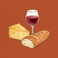
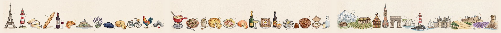

<!doctype html>
<html lang="fr">
<head>
<meta charset="utf-8">
<meta name="viewport" content="width=device-width, initial-scale=1, viewport-fit=cover">
<meta name="description" content="Les 13 régions de France pour les élèves de bac pro hôtellerie-restauration : identité, spécialités, fromages, cave, glossaire et quiz.">
<meta name="theme-color" content="#F5EDE0">
<meta property="og:type" content="website">
<meta property="og:site_name" content="Régions de France">
<meta property="og:title" content="Régions de France">
<meta property="og:description" content="Spécialités, fromages AOP et boissons des 13 régions, dans ta poche. Carte, fiches, glossaire et quiz.">
<meta property="og:url" content="https://benjaminhermand-max.github.io/regions-de-france/">
<meta property="og:image" content="https://benjaminhermand-max.github.io/regions-de-france/img/partage-carre.jpg">
<meta property="og:image:width" content="1200">
<meta property="og:image:height" content="1200">
<meta property="og:image:alt" content="Régions de France : carte aquarelle et frise des spécialités">
<meta property="og:locale" content="fr_FR">
<meta name="twitter:card" content="summary">
<link rel="icon" href="img/icone/favicon-32.png" sizes="32x32" type="image/png">
<link rel="apple-touch-icon" href="img/icone/apple-touch-icon.png">
<link rel="manifest" href="manifest.webmanifest">
<meta name="apple-mobile-web-app-capable" content="yes">
<meta name="mobile-web-app-capable" content="yes">
<meta name="apple-mobile-web-app-title" content="Régions">
<meta name="apple-mobile-web-app-status-bar-style" content="default">
<style>:root{padding-top:env(safe-area-inset-top,0px);padding-bottom:env(safe-area-inset-bottom,0px)}body{margin:0;font:14px system-ui,sans-serif}img{max-width:100%}[hidden]{display:none!important}</style>
<title>Régions de France</title>
<link rel="preconnect" href="https://fonts.googleapis.com">
<link rel="preconnect" href="https://fonts.gstatic.com" crossorigin>
<link rel="stylesheet" href="https://fonts.googleapis.com/css2?family=Fraunces:ital,opsz,wght@0,9..144,600;1,9..144,500;1,9..144,600&family=Source+Sans+3:wght@400;600;700&display=swap">
<style>
/* Carnet de route : papier crème, encre brune, accent terracotta ; une couleur par région ; colonne mobile centrée */
:root{
  --paper:#F5EDE0; --surface:#FFFCF6; --ink:#2B2420; --muted:#6A5D50;
  --line:#E2D4BF; --line-soft:#EDE3D3; --seg:#EADFCD;
  --accent:#A84A24; --accent-soft:#F2DCCB; --accent-ink:#5A2A12;
  --ok:#3E6B45; --ok-soft:#E3EEDF; --ok-ink:#26472B;
  --ko:#9B2C2C; --ko-soft:#F6DEDA; --ko-ink:#6E1E1E;
  --band-ink:#2B2420; --map-halo:#FFFCF6;
  --f-display:'Fraunces', Georgia, 'Times New Roman', serif;
  --f-body:'Source Sans 3', 'Segoe UI', system-ui, sans-serif;
}
:root{color-scheme:light}

html,body{background:var(--paper)}
body{color:var(--ink);font-family:var(--f-body);font-size:16px;line-height:1.5}
*{box-sizing:border-box}
button{font:inherit;color:inherit}
:focus-visible{outline:2.5px solid var(--accent);outline-offset:2px;border-radius:6px}
.app{max-width:520px;margin:0 auto;padding-left:max(16px,env(safe-area-inset-left,0px));padding-right:max(16px,env(safe-area-inset-right,0px));padding-block:24px calc(110px + env(safe-area-inset-bottom,0px))}
.kicker{font-size:12px;font-weight:700;letter-spacing:.14em;text-transform:uppercase;color:var(--accent)}
h1,h2,h3{font-family:var(--f-display);font-style:italic;font-weight:600;margin:0;text-wrap:balance}
h1{font-size:34px;line-height:1.08}
h2{font-size:22px;line-height:1.2}
h3{font-size:18px;line-height:1.25}
.stroke{display:block;margin-top:4px}
.head{display:flex;flex-direction:column;gap:4px;margin-bottom:16px}
.stack{display:flex;flex-direction:column;gap:14px}
.intro{margin:2px 2px 0;font-size:16px;line-height:1.55;color:var(--ink);max-width:62ch;text-wrap:pretty}
.frise{overflow:hidden;border-radius:14px;background:#F5EDE0;height:112px}
.frise .track{display:flex;width:max-content;height:100%;animation:frise 45s linear infinite}
.frise img{height:100%;width:auto;max-width:none;display:block}
@keyframes frise{to{transform:translateX(-50%)}}
@media (prefers-reduced-motion: reduce){.frise .track{animation:none}}
.muted{color:var(--muted)}
.panel{background:var(--surface);border:1px solid var(--line);border-radius:14px}

/* carte */
.map{padding:10px 8px 6px}
.map svg{display:block;width:100%;height:auto}
.map path{stroke:var(--surface);stroke-width:1.4;stroke-linejoin:round;cursor:pointer;transition:filter .15s}
.map a:hover path,.map a:focus-visible path{filter:brightness(.92)}
.map .home path{stroke:var(--band-ink);stroke-width:1.6}
.map text{font-family:var(--f-body);font-size:9px;font-weight:700;fill:var(--band-ink);stroke:var(--map-halo);stroke-width:2.4px;paint-order:stroke;stroke-linejoin:round;pointer-events:none;text-anchor:middle}
.map p{margin:2px 0 0;text-align:center;font-size:13px;color:var(--muted)}
.resume{display:flex;align-items:center;gap:12px;padding:12px 14px;text-decoration:none;color:var(--ink);cursor:pointer;width:100%;text-align:left}
.resume .bar{width:12px;height:40px;border-radius:6px;flex-shrink:0}
.resume .t{flex:1;display:flex;flex-direction:column}
.resume .t small{font-size:12px;font-weight:700;letter-spacing:.1em;text-transform:uppercase;color:var(--muted)}
.resume .t b{font-family:var(--f-display);font-style:italic;font-size:18px;font-weight:600}

/* grille des régions */
.grid{display:grid;grid-template-columns:repeat(2,minmax(0,1fr));gap:10px}
.card{display:flex;flex-direction:column;background:var(--surface);border:1px solid var(--line);border-radius:14px;overflow:hidden;cursor:pointer;padding:0;text-align:left}
.card img{width:100%;aspect-ratio:1/1;object-fit:cover;display:block;background:#F8F7F2}
.card span{padding:10px 10px 12px;border-top:4px solid;font-family:var(--f-display);font-style:italic;font-weight:600;font-size:15px;line-height:1.15}

/* fiche */
.band{margin-left:calc(-1 * max(16px,env(safe-area-inset-left,0px)));margin-right:calc(-1 * max(16px,env(safe-area-inset-right,0px)));margin-top:-24px;padding:10px max(16px,env(safe-area-inset-right,0px)) 18px max(16px,env(safe-area-inset-left,0px));color:var(--band-ink)}
.back{display:inline-flex;align-items:center;gap:4px;min-height:44px;background:none;border:0;padding:0;font-weight:700;color:var(--band-ink);cursor:pointer}
.band .row{display:flex;gap:12px;align-items:center}
.band .row>div{flex:1;min-width:0;display:flex;flex-direction:column;gap:4px}
.band .kick{font-size:12px;font-weight:700;letter-spacing:.14em;text-transform:uppercase;opacity:.8}
.band h1{font-size:30px}
.band p{margin:0;font-weight:600;font-size:14px;opacity:.85}
.band img{width:112px;height:112px;border-radius:16px;object-fit:cover;flex-shrink:0;box-shadow:0 0 0 3px #FFFCF6;background:#F8F7F2}
.tabs{display:grid;grid-template-columns:repeat(4,auto);justify-content:space-between;background:var(--surface);border-bottom:1px solid var(--line);margin:0 calc(-1 * max(16px,env(safe-area-inset-right,0px))) 16px calc(-1 * max(16px,env(safe-area-inset-left,0px)));padding:0 8px;position:sticky;top:env(safe-area-inset-top,0px);z-index:2}
.tabs button{min-height:48px;padding:0 8px;border:0;border-bottom:2.5px solid transparent;background:transparent;font-size:15px;font-weight:600;color:var(--muted);cursor:pointer}
.tabs button[aria-selected="true"]{border-bottom-color:var(--accent);color:var(--accent);font-weight:700}
.sec{display:flex;align-items:center;gap:8px}
.sec svg{flex-shrink:0;color:var(--accent)}
.list2{display:grid;grid-template-columns:repeat(2,minmax(0,1fr))}
.list2 div{padding:11px 14px;font-weight:600;border-bottom:1px solid var(--line-soft)}
.list2 div:nth-child(odd){border-right:1px solid var(--line-soft)}
.list2 div:nth-last-child(-n+2):nth-child(odd),.list2 div:last-child{border-bottom:0}
.chips{display:flex;flex-wrap:wrap;gap:8px}
.chip{padding:7px 12px;border-radius:999px;background:var(--seg);font-size:14px;font-weight:600}
.tip{background:var(--accent-soft);color:var(--accent-ink);border-radius:14px;padding:12px 14px;margin:0}
.tip b{font-family:var(--f-display);font-style:italic}
.txt h3{margin-bottom:2px}
.txt p{margin:0;max-width:65ch}
.deps{width:100%;border-collapse:collapse;font-variant-numeric:tabular-nums}
.deps td{padding:9px 14px;border-bottom:1px solid var(--line-soft);vertical-align:top}
.deps tr:last-child td{border-bottom:0}
.deps td:first-child{width:3.2em;font-weight:700;color:var(--accent)}
.deps td:last-child{text-align:right;color:var(--muted)}
.pate{padding:12px 14px;border-bottom:1px solid var(--line-soft)}
.pate:last-child{border-bottom:0}
.pate small{display:block;font-size:12px;font-weight:700;letter-spacing:.1em;text-transform:uppercase;color:var(--muted);margin-bottom:6px}
.pate.none{color:var(--muted)}
.vin{padding:14px;display:flex;flex-direction:column;gap:6px;border-bottom:1px solid var(--line-soft)}
.vin:last-child{border-bottom:0}
.vin p{margin:0}
.vin .cep{font-size:14px;color:var(--muted)}
.vin .cep b{color:var(--ink)}
.soon{padding:14px;color:var(--muted)}
.next{display:flex;justify-content:space-between;align-items:center;gap:10px;width:100%;padding:14px;cursor:pointer;color:var(--ink);text-align:left}
.pager{display:grid;grid-template-columns:repeat(2,minmax(0,1fr));gap:10px;margin-top:20px}
.pg{display:flex;align-items:center;gap:10px;min-height:60px;padding:10px 14px;cursor:pointer;color:var(--ink);text-align:left}
.pg.nx{justify-content:flex-end;text-align:right}
.pg small{display:block;font-size:12px;font-weight:700;letter-spacing:.1em;text-transform:uppercase;color:var(--muted)}
.pg b{font-family:var(--f-display);font-style:italic;font-size:18px}
.pg .ar{display:flex;color:var(--accent)}
.pg:hover{border-color:var(--accent)}
.next small{display:block;font-size:12px;font-weight:700;letter-spacing:.1em;text-transform:uppercase;color:var(--muted)}
.next b{font-family:var(--f-display);font-style:italic;font-size:18px}

/* quiz */
.seg{display:grid;grid-template-columns:repeat(2,minmax(0,1fr));gap:4px;background:var(--seg);border-radius:12px;padding:4px}
.seg button{min-height:44px;border:0;border-radius:9px;background:transparent;font-weight:600;cursor:pointer}
.seg button[aria-pressed="true"]{background:var(--ink);color:var(--paper);font-weight:700}
select{width:100%;min-height:48px;border-radius:12px;border:1px solid var(--line);background:var(--surface);color:var(--ink);padding:0 12px;font:inherit;font-weight:600}
.prog{display:flex;flex-direction:column;gap:6px}
.prog .l{display:flex;justify-content:space-between;font-size:14px;font-weight:600;color:var(--muted);font-variant-numeric:tabular-nums}
.bar{height:6px;border-radius:999px;background:var(--line);overflow:hidden}
.bar i{display:block;height:100%;background:var(--accent);border-radius:999px;transition:width .3s}
.q{padding:20px 16px;display:flex;flex-direction:column;gap:14px}
.q .ques{font-family:var(--f-display);font-style:italic;font-size:21px;font-weight:600;line-height:1.25;margin:0}
.opts{display:flex;flex-direction:column;gap:8px}
.opt{min-height:52px;display:flex;align-items:center;gap:10px;text-align:left;padding:8px 14px;border-radius:12px;border:1px solid var(--line);background:var(--surface);font-weight:600;cursor:pointer}
.opt:disabled{cursor:default}
.opt .dot{width:10px;height:10px;border-radius:50%;flex-shrink:0}
.opt .lab{flex:1}
.opt.good{border:2px solid var(--ok);background:var(--ok-soft);color:var(--ok-ink);font-weight:700}
.opt.bad{border:2px solid var(--ko);background:var(--ko-soft);color:var(--ko-ink)}
.fb{border-radius:12px;padding:12px 14px;margin:0}
.fb.good{background:var(--ok-soft);color:var(--ok-ink)}
.fb.bad{background:var(--ko-soft);color:var(--ko-ink)}
.btn{min-height:52px;border:0;border-radius:12px;background:var(--accent);color:#FFFCF6;font-weight:700;font-size:16px;cursor:pointer;width:100%}
.score{padding:24px 16px;text-align:center;display:flex;flex-direction:column;gap:8px;align-items:center}
.score .n{font-family:var(--f-display);font-size:56px;font-weight:600;line-height:1;font-variant-numeric:tabular-nums}

/* glossaire */
label.l{font-size:14px;font-weight:600;color:var(--muted)}
.search{display:flex;align-items:center;gap:8px;background:var(--surface);border:1px solid var(--line);border-radius:12px;padding:0 14px}
.search input{flex:1;min-width:0;min-height:48px;border:0;outline:none;background:transparent;font:inherit;color:var(--ink)}
.filters{display:flex;gap:8px;flex-wrap:wrap}
.filters button{min-height:44px;padding:0 18px;border-radius:999px;border:1px solid var(--line);background:var(--surface);font-weight:600;cursor:pointer}
.filters button[aria-pressed="true"]{background:var(--ink);border-color:var(--ink);color:var(--paper);font-weight:700}
.letter{font-family:var(--f-display);font-style:italic;font-weight:600;font-size:24px;color:var(--accent);margin-top:4px}
.entry{display:flex;align-items:center;gap:10px;padding:11px 14px;border:0;border-bottom:1px solid var(--line-soft);background:transparent;width:100%;text-align:left;cursor:pointer}
.entry:last-child{border-bottom:0}
.entry .t{flex:1;min-width:0;display:flex;flex-direction:column}
.entry .t b{font-weight:700}
.entry .t small{font-size:14px;color:var(--muted)}
.entry .r{display:flex;flex-direction:column;align-items:flex-end;gap:2px;font-size:13px;font-weight:600;text-align:right}
.entry .r span{display:flex;align-items:center;gap:6px}
.entry .dot{width:10px;height:10px;border-radius:50%}
.empty{padding:16px;color:var(--muted)}

.pts{margin:4px 0 0;padding-left:1.1em;display:flex;flex-direction:column;gap:6px;max-width:65ch}
.pts li{line-height:1.45}
.pts li::marker{color:var(--accent)}
.txt>div+div{padding-top:12px;border-top:1px solid var(--line-soft)}
/* boissons */
.drinks{display:flex;flex-direction:column;gap:10px}
.drink{display:flex;gap:14px;align-items:center;padding:12px}
.drink img{width:84px;height:120px;object-fit:contain;flex-shrink:0;filter:drop-shadow(0 4px 6px rgba(30,20,10,.25))}
.drink>div{min-width:0;display:flex;flex-direction:column;gap:4px}
.drink p{margin:0;font-size:15px;line-height:1.45}
/* spécialités cliquables + fenêtre */
.list2 div:has(.dish){padding:0}
/* fromages : code couleur des pâtes du dossier */
:root{--p-ppc:#D64541;--p-ppnc:#E79AA6;--p-pers:#2F7FD6;--p-lavee:#E8892B;--p-fleurie:#8D8D8D;--p-chevre:#E9C840}
.pgroup{display:flex;flex-direction:column;gap:8px}
.pgroup>small{display:flex;align-items:center;gap:8px;font-size:12px;font-weight:700;letter-spacing:.1em;text-transform:uppercase;color:var(--muted)}
.pgroup i,.ck-h i,.pop .chip i{width:10px;height:10px;border-radius:3px;flex-shrink:0;display:inline-block}
.cks{display:grid;grid-template-columns:repeat(2,minmax(0,1fr));gap:8px}
@media (max-width:360px){.cks{grid-template-columns:1fr}}
.ck{display:flex;flex-direction:column;gap:4px;padding:12px;border:1px solid var(--line);border-radius:12px;background:var(--surface);text-align:left;cursor:pointer;min-width:0}
.ck:hover{border-color:var(--accent)}
.ck-h{display:flex;align-items:center;gap:7px}
.ck-h b{font-family:var(--f-display);font-style:italic;font-size:16px;line-height:1.2}
.ck-m{font-size:13px;color:var(--muted);line-height:1.35}
.ck-m em{font-style:normal;font-weight:700;font-size:11px;background:var(--ink);color:var(--paper);border-radius:4px;padding:1px 5px;margin-right:6px;letter-spacing:.04em}
.ck-p{font-size:14px;line-height:1.4}
.pop .meta{display:flex;flex-wrap:wrap;gap:6px}
.pop .chip{display:inline-flex;align-items:center;gap:6px}
.pop .go{align-self:flex-start;min-height:44px;margin-top:4px;padding:0 16px;border-radius:12px;border:1px solid var(--line);background:var(--paper);font-weight:700;cursor:pointer;color:var(--accent)}
.dish{display:flex;align-items:center;justify-content:space-between;gap:8px;width:100%;min-height:48px;height:100%;padding:11px 14px;border:0;background:transparent;font-weight:600;text-align:left;cursor:pointer}
.dish svg{flex-shrink:0;color:var(--accent);opacity:.8}
.dish:hover{background:var(--accent-soft)}
dialog.pop{border:0;padding:0;border-radius:18px;background:var(--surface);color:var(--ink);width:min(440px,calc(100vw - 32px));max-height:calc(100dvh - 48px);overflow:auto;box-shadow:0 18px 50px rgba(30,20,10,.35)}
dialog.pop::backdrop{background:rgba(30,22,16,.55)}
.pop .ph{position:relative}
.pop .ph .drinkpic img{background:transparent;box-shadow:none;min-width:0;max-height:280px;filter:drop-shadow(0 8px 10px rgba(30,20,10,.3))}
.pop .ph .pic{display:flex;align-items:center;justify-content:center;padding:26px 16px}
.pop .ph .pic img{display:block;width:auto;height:auto;max-width:min(340px,86%);max-height:300px;min-width:180px;border-radius:16px;background:#fff;box-shadow:0 6px 18px rgba(30,20,10,.25)}
.pop .ph .none{aspect-ratio:4/3;display:flex;flex-direction:column;align-items:center;justify-content:center;gap:6px;color:var(--band-ink);font-weight:700;font-size:14px;text-align:center;padding:16px}
.pop .ph .none span{opacity:.75;font-weight:600}
.pop .x{position:absolute;top:10px;right:10px;width:44px;height:44px;border-radius:50%;border:0;background:var(--surface);color:var(--ink);display:flex;align-items:center;justify-content:center;cursor:pointer;box-shadow:0 2px 8px rgba(0,0,0,.18)}
.pop .nv{position:absolute;top:50%;transform:translateY(-50%);width:44px;height:44px;border-radius:50%;border:0;background:var(--surface);color:var(--ink);display:grid;place-items:center;cursor:pointer;box-shadow:0 2px 8px rgba(0,0,0,.2);z-index:1}
.pop .nv:hover{color:var(--accent)}
.pop .pv{left:10px} .pop .nv.nx{right:10px}
.pop .cnt{position:absolute;bottom:10px;left:50%;transform:translateX(-50%);background:rgba(43,36,32,.62);color:#FFFCF6;font-size:13px;font-weight:700;padding:2px 10px;border-radius:999px;font-variant-numeric:tabular-nums}
.pop .bd{padding:16px 18px 20px;display:flex;flex-direction:column;gap:8px}
.pop .bd p{margin:0;max-width:65ch}
.pop .reg{display:flex;align-items:center;gap:6px;font-size:13px;font-weight:700;letter-spacing:.08em;text-transform:uppercase;color:var(--muted)}
.pop .reg i{width:10px;height:10px;border-radius:50%}
@media (prefers-reduced-motion: no-preference){ dialog.pop[open]{animation:pop .2s ease-out} @keyframes pop{from{transform:translateY(12px);opacity:0}to{transform:none;opacity:1}} }

/* quiz photo */
.qimg{display:flex;align-items:center;justify-content:center;border-radius:14px;padding:18px;min-height:180px}
.qimg img{display:block;max-width:min(100%,300px);max-height:240px;border-radius:12px;background:#fff;box-shadow:0 6px 16px rgba(30,20,10,.22)}
.qimg.cut img{background:transparent;box-shadow:none;max-height:260px;filter:drop-shadow(0 8px 10px rgba(30,20,10,.3))}
/* trophées */
.map .cups circle{fill:var(--surface);stroke:#C9A227;stroke-width:1.6;filter:drop-shadow(0 1px 2px rgba(30,20,10,.35))}
.map .cups text{font-size:14px;stroke:none;text-anchor:middle}
.map p.tro-l{margin-top:6px;font-size:14px;font-weight:700;color:var(--accent)}
.card{position:relative}
.card .cup{position:absolute;top:8px;right:8px;width:36px;height:36px;border-radius:50%;background:var(--surface);display:grid;place-items:center;font-size:19px;box-shadow:0 2px 8px rgba(30,20,10,.2)}
dialog.tro{border:0;padding:0;border-radius:22px;background:var(--surface);color:var(--ink);width:min(380px,calc(100vw - 32px));box-shadow:0 18px 50px rgba(30,20,10,.35);overflow:visible}
dialog.tro::backdrop{background:rgba(30,22,16,.55)}
.tro-b{position:relative;padding:34px 24px 24px;display:flex;flex-direction:column;align-items:center;text-align:center;gap:8px}
.tro-i{font-size:76px;line-height:1;position:relative;z-index:1}
.tro-b h2{font-size:28px}
.tro-b p{margin:0}
.tro-n{font-weight:700;color:var(--accent);font-size:14px;letter-spacing:.06em;text-transform:uppercase}
.tro-a{display:flex;flex-direction:column;gap:8px;width:100%;margin-top:10px}
.tro-x{min-height:44px;border:0;background:none;font-weight:700;color:var(--muted);cursor:pointer}
.tro-burst{position:absolute;left:50%;top:72px;width:0;height:0}
.tro-burst i{position:absolute;width:10px;height:10px;border-radius:3px;opacity:0}
@media (prefers-reduced-motion: no-preference){
  dialog.tro[open] .tro-i{animation:cupIn .7s cubic-bezier(.2,1.4,.4,1) both}
  dialog.tro[open] .tro-burst i{animation:burst 1s .15s ease-out both}
  @keyframes cupIn{from{transform:scale(.2) rotate(-25deg);opacity:0}to{transform:none;opacity:1}}
  @keyframes burst{0%{opacity:1;transform:rotate(var(--a)) translateY(0) scale(1)}100%{opacity:0;transform:rotate(var(--a)) translateY(-120px) scale(.6) rotate(180deg)}}
  /* ouverture d'une fiche */
  .band.enter{animation:bandIn .5s cubic-bezier(.2,.8,.2,1) both}
  .band.enter .row>div>*{animation:fadeUp .5s .15s both}
  .band.enter img{animation:imgIn .7s .2s cubic-bezier(.2,1.3,.4,1) both}
  .enter-c{animation:fadeUp .45s .3s both}
  .enter-c2{animation:fadeUp .5s .4s both}
  @keyframes bandIn{from{clip-path:inset(0 0 100% 0 round 0 0 22px 22px)}to{clip-path:inset(0 0 0 0 round 0)}}
  @keyframes fadeUp{from{opacity:0;transform:translateY(14px)}to{opacity:1;transform:none}}
  .slide-l{animation:slideL .3s ease-out both}
  .slide-r{animation:slideR .3s ease-out both}
  @keyframes slideL{from{opacity:0;transform:translateX(44px)}to{opacity:1;transform:none}}
  @keyframes slideR{from{opacity:0;transform:translateX(-44px)}to{opacity:1;transform:none}}
  @keyframes imgIn{from{opacity:0;transform:scale(.6) rotate(-8deg)}to{opacity:1;transform:none}}
}

/* navigation */
nav.tabbar{position:fixed;left:0;right:0;bottom:0;background:var(--surface);border-top:1px solid var(--line);padding:8px max(8px,env(safe-area-inset-right,0px)) calc(10px + env(safe-area-inset-bottom,0px)) max(8px,env(safe-area-inset-left,0px));z-index:5}
.totop{position:fixed;right:max(16px,env(safe-area-inset-right,0px));bottom:calc(86px + env(safe-area-inset-bottom,0px));width:48px;height:48px;border-radius:50%;border:1px solid var(--line);background:var(--surface);color:var(--accent);display:grid;place-items:center;box-shadow:0 6px 18px rgba(43,36,32,.18);cursor:pointer;z-index:20;opacity:0;transform:translateY(10px);pointer-events:none;transition:opacity .2s,transform .2s}
.totop.on{opacity:1;transform:none;pointer-events:auto}
nav.tabbar .in{max-width:520px;margin:0 auto;display:grid;grid-template-columns:repeat(4,minmax(0,1fr))}
nav.tabbar button{display:flex;flex-direction:column;align-items:center;gap:3px;min-height:52px;justify-content:center;border:0;background:transparent;color:var(--muted);font-size:12px;font-weight:600;cursor:pointer}
nav.tabbar button[aria-current="page"]{color:var(--accent);font-weight:700}
@media (prefers-reduced-motion: reduce){*{transition:none!important}}
.home,.gl,.idgrid,.iddeps{display:flex;flex-direction:column;gap:14px}
.home>.head{margin-bottom:2px}
.home>.map{background:transparent;border:0}
.d-only{display:none}
nav.tabbar .brand{display:none}

/* ===== Ordinateur ===== */
@media (min-width:1024px){
  .m-only{display:none} .d-only{display:inline}
  .app{max-width:1180px;padding-left:max(32px,env(safe-area-inset-left,0px));padding-right:max(32px,env(safe-area-inset-right,0px));padding-block:104px 72px}
  h1{font-size:46px}
  h2{font-size:24px}
  .head{margin-bottom:24px}
  /* barre du haut */
  nav.tabbar{top:0;bottom:auto;border-top:0;border-bottom:1px solid var(--line);padding:0 max(32px,env(safe-area-inset-right,0px)) 0 max(32px,env(safe-area-inset-left,0px))}
  nav.tabbar .in{max-width:1116px;height:68px;display:flex;align-items:center;gap:4px}
  nav.tabbar button{flex-direction:row;gap:8px;min-height:44px;padding:0 16px;border-radius:999px;font-size:16px}
  nav.tabbar button svg{width:20px;height:20px}
  nav.tabbar button:hover{background:var(--seg);color:var(--ink)}
  nav.tabbar button[aria-current="page"]{background:var(--accent-soft);color:var(--accent-ink)}
  nav.tabbar .brand{display:flex;margin-right:auto;padding:0 12px 0 0;font-family:var(--f-display);font-style:italic;font-weight:600;font-size:23px;color:var(--ink)}
  nav.tabbar .brand[aria-current]{background:transparent;color:var(--ink)}
  nav.tabbar .brand:hover{background:transparent;color:var(--accent)}
  nav.tabbar .brand img{width:34px;height:34px;border-radius:9px;display:block}
  .totop{right:max(32px,env(safe-area-inset-right,0px));bottom:32px}
  /* accueil */
  .home{display:grid;grid-template-columns:minmax(0,1fr) minmax(0,1.15fr);grid-template-rows:auto auto auto auto 1fr;grid-template-areas:"frise frise" "head map" "intro map" "cta map" ". map";column-gap:56px;row-gap:18px}
  .home>.frise{grid-area:frise;height:150px;margin-bottom:18px}
  .home>.head{grid-area:head;margin:0}
  .home>.head h1{font-size:54px}
  .home>.cta{grid-area:cta;display:grid;grid-template-columns:repeat(2,minmax(0,1fr));gap:12px;margin-top:12px}
  .home>.cta .pg{justify-content:space-between}
  .home>.intro{grid-area:intro;font-size:20px;line-height:1.6;margin:0}
  .home>.map{grid-area:map;padding:18px 18px 12px}
  .home>.map svg{max-height:calc(100dvh - 330px);min-height:420px}
  .map text{font-size:8.5px}
  /* liste des régions */
  .grid{grid-template-columns:repeat(5,minmax(0,1fr));gap:18px}
  .card{transition:transform .15s,border-color .15s,box-shadow .15s}
  .card:hover{transform:translateY(-3px);border-color:var(--accent);box-shadow:0 10px 24px rgba(43,36,32,.12)}
  .card span{font-size:17px;padding:12px 14px 14px}
  /* fiche région */
  .band{margin:0 0 0;border-radius:22px;padding:18px 36px 30px}
  .band h1{font-size:50px}
  .band p{font-size:16px}
  .band .kick{font-size:13px}
  .band .row{gap:32px}
  .band img{width:190px;height:190px;border-radius:20px}
  .tabs{margin:18px 0 24px;top:68px;border:1px solid var(--line);border-radius:14px;justify-content:start;gap:6px;padding:0 10px}
  .tabs button{padding:0 22px;font-size:16px}
  .tabs button:hover{color:var(--ink)}
  .list2{grid-template-columns:repeat(3,minmax(0,1fr))}
  .list2>div:nth-child(n):nth-last-child(n){border-right:1px solid var(--line-soft);border-bottom:1px solid var(--line-soft)}
  .list2>div:nth-child(3n):nth-last-child(n),.list2>div:last-child:nth-child(n){border-right:0}
  .list2>div:nth-child(3n+1):nth-last-child(-n+3),.list2>div:nth-child(3n+1):nth-last-child(-n+3)~div{border-bottom:0}
  .cks{grid-template-columns:repeat(3,minmax(0,1fr));gap:12px}
  .ck{padding:14px 16px}
  .vins{display:grid;grid-template-columns:repeat(2,minmax(0,1fr))}
  .vins .vin:nth-child(odd){border-right:1px solid var(--line-soft)}
  .vins .vin:nth-child(odd):nth-last-child(2){border-bottom:0}
  .vins .vin:nth-child(odd):last-child{grid-column:1/-1;border-right:0}
  .drinks{display:grid;grid-template-columns:repeat(2,minmax(0,1fr));gap:14px}
  .drink{padding:16px 18px;align-items:flex-start}
  .idgrid{display:grid;grid-template-columns:minmax(0,1.5fr) minmax(0,1fr);gap:28px;align-items:start}
  .idgrid>.txt{padding:22px 26px!important;gap:16px!important}
  .iddeps{position:sticky;top:156px}
  .pager{margin-top:32px}
  .pg:hover,.ck:hover,.dish:hover{cursor:pointer}
  /* quiz */
  .narrow{max-width:780px;margin:0 auto}
  .opts{display:grid;grid-template-columns:repeat(2,minmax(0,1fr));gap:10px}
  .q{padding:28px 28px}
  .q .ques{font-size:25px}
  .opt:not(:disabled):hover{border-color:var(--accent);background:var(--accent-soft)}
  .btn{max-width:360px;margin:0 auto}
  /* glossaire */
  .gl{display:grid;grid-template-columns:320px minmax(0,1fr);gap:40px;align-items:start}
  .gside{position:sticky;top:100px;background:var(--surface);border:1px solid var(--line);border-radius:16px;padding:20px}
  .gside .filters button{padding:0 14px}
  .entry:hover{background:var(--accent-soft)}
  /* fenêtre */
  dialog.pop{width:min(880px,calc(100vw - 64px))}
  dialog.pop[open]{display:grid;grid-template-columns:minmax(0,1fr) minmax(0,1fr)}
  .pop .ph,.pop .ph>div{height:100%}
  .pop .ph .pic{padding:36px 28px;min-height:380px}
  .pop .ph .pic img{width:min(100%,360px);max-width:100%;max-height:420px;object-fit:cover}
  .pop .ph .drinkpic img{width:auto;object-fit:contain}
  .pop .ph .drinkpic img{max-height:400px}
  .pop .ph .x{left:auto}
  .pop .bd{padding:36px 32px;gap:12px;justify-content:center}
  .pop .bd h2{font-size:32px}
  .pop .bd p{font-size:17px;line-height:1.6}
}
@media (min-width:1024px) and (max-width:1200px){ .grid{grid-template-columns:repeat(4,minmax(0,1fr))} }
</style>

<main class="app" id="view" aria-live="polite"></main>
<dialog class="pop" id="pop" aria-labelledby="pop-title"></dialog>
<dialog class="tro" id="tro" aria-labelledby="tro-title"></dialog>
<button class="totop" id="totop" aria-label="Remonter en haut de la page" tabindex="-1"><svg width="22" height="22" viewBox="0 0 24 24" fill="none" stroke="currentColor" stroke-width="2.4" stroke-linecap="round" stroke-linejoin="round" aria-hidden="true"><path d="M12 19V5M5 12l7-7 7 7"/></svg></button>
<nav class="tabbar" aria-label="Navigation principale"><div class="in">
  <button class="brand" data-go="carte" aria-label="Accueil, Régions de France"><span>Régions de France</span></button>
  <button data-go="carte"><svg width="24" height="24" viewBox="0 0 24 24" fill="none" stroke="currentColor" stroke-width="1.8" stroke-linecap="round" stroke-linejoin="round" aria-hidden="true"><path d="M9 4 3 6v14l6-2 6 2 6-2V4l-6 2-6-2z"/><path d="M9 4v14M15 6v14"/></svg>Carte</button>
  <button data-go="regions"><svg width="24" height="24" viewBox="0 0 24 24" fill="none" stroke="currentColor" stroke-width="1.8" stroke-linecap="round" stroke-linejoin="round" aria-hidden="true"><rect x="4" y="4" width="7" height="7" rx="1.5"/><rect x="13" y="4" width="7" height="7" rx="1.5"/><rect x="4" y="13" width="7" height="7" rx="1.5"/><rect x="13" y="13" width="7" height="7" rx="1.5"/></svg>Régions</button>
  <button data-go="glossaire"><svg width="24" height="24" viewBox="0 0 24 24" fill="none" stroke="currentColor" stroke-width="1.8" stroke-linecap="round" stroke-linejoin="round" aria-hidden="true"><path d="M4 5a2 2 0 0 1 2-2h13v16H6a2 2 0 0 0-2 2z"/><path d="M4 19V5"/><path d="M8 7h7"/></svg>Glossaire</button>
  <button data-go="quiz"><svg width="24" height="24" viewBox="0 0 24 24" fill="none" stroke="currentColor" stroke-width="1.8" stroke-linecap="round" stroke-linejoin="round" aria-hidden="true"><circle cx="12" cy="12" r="9"/><path d="M9.5 9.5a2.5 2.5 0 1 1 3.5 2.3c-.6.3-1 .9-1 1.6V14"/><path d="M12 17.5h.01"/></svg>Quiz</button>
</div></nav>

<script>
const MAP = {"11": "M178 68L182 68L185 68L189 67L192 68L194 71L196 73L199 76L197 78L198 82L201 83L199 86L197 88L198 91L194 91L191 91L188 94L188 97L185 99L181 99L178 99L176 96L174 94L170 93L167 94L164 93L163 89L160 87L158 84L156 82L155 78L154 75L153 71L154 68L157 66L158 63L161 65L164 64L168 64L171 65L174 65L178 67Z", "24": "M185 120L186 124L185 127L188 129L189 133L190 137L189 141L189 145L184 147L180 148L178 151L176 154L173 154L171 157L168 157L165 157L161 157L157 157L154 158L151 160L148 159L145 156L144 153L140 152L139 148L138 145L136 142L134 139L131 138L129 140L126 140L126 136L122 135L120 132L120 128L122 126L123 122L123 119L126 118L129 117L131 115L133 112L136 110L137 107L138 103L138 100L137 95L137 92L140 90L140 87L138 85L137 81L140 80L144 79L147 78L150 77L152 75L155 77L155 80L157 83L160 85L161 88L164 91L164 94L168 94L172 94L175 95L177 97L180 99L183 98L186 99L189 101L191 104L188 108L189 111L185 112L186 115L187 118Z", "27": "M202 146L201 149L197 147L193 148L190 147L189 144L190 139L189 136L188 132L186 128L186 124L185 121L187 117L186 114L187 112L189 109L191 105L189 102L188 99L189 95L190 92L193 92L196 91L199 92L202 94L202 97L204 99L207 101L208 105L211 106L215 105L218 107L221 105L224 105L227 104L230 105L231 108L234 110L234 113L236 116L240 117L243 117L245 115L249 115L251 112L252 109L255 107L258 105L261 104L263 106L266 105L269 108L272 106L274 108L277 110L279 112L281 114L281 118L284 120L280 121L279 124L282 126L279 128L278 131L276 133L273 135L271 138L268 140L268 143L267 146L264 148L262 151L260 154L259 157L256 161L252 162L249 160L247 162L244 160L241 158L239 154L236 155L232 155L231 159L230 163L229 166L227 163L224 161L220 161L219 165L216 165L212 165L209 164L209 161L211 159L211 156L208 155L205 153L204 150L203 148Z", "28": "M92 58L95 57L99 58L103 59L106 59L110 59L113 61L116 60L120 58L123 56L120 54L121 51L122 47L125 46L128 44L132 42L135 41L139 40L142 39L146 38L149 35L153 36L155 38L158 40L159 44L158 47L158 50L158 53L158 57L159 60L158 63L157 66L154 68L153 71L152 75L150 77L147 78L144 79L141 80L138 81L138 84L141 86L140 90L137 92L137 95L133 95L130 94L127 93L127 90L123 88L121 90L117 91L115 89L114 85L110 87L107 87L103 89L100 88L97 87L94 87L90 86L88 87L84 88L83 84L86 82L83 79L82 76L83 73L81 70L81 66L81 62L79 59L76 57L75 53L76 49L73 47L77 47L80 48L84 48L88 47L90 50L89 54L91 57Z", "32": "M212 57L209 57L206 58L203 60L203 63L202 66L204 70L201 72L199 75L196 73L194 71L192 68L190 66L186 67L182 68L179 67L176 67L173 65L170 64L166 63L163 64L160 64L158 61L159 58L159 55L158 51L158 48L160 45L158 40L155 38L153 36L150 34L153 31L156 30L154 27L156 25L155 22L155 19L155 15L155 12L155 8L158 6L161 4L166 3L169 2L173 1L177 0L179 3L179 8L182 10L184 12L188 11L191 10L194 13L194 16L195 19L198 20L201 20L204 24L204 26L208 25L211 25L214 27L215 30L216 33L214 36L216 38L217 41L217 44L214 47L212 49L213 52L212 55Z", "44": "M216 38L220 38L223 38L227 37L227 33L230 31L230 35L229 38L231 41L233 44L236 45L238 47L242 48L244 50L245 54L249 53L252 51L254 54L257 55L260 54L263 53L266 55L270 56L271 59L273 62L276 65L279 63L282 66L285 66L288 65L292 65L294 68L297 69L301 69L305 70L309 71L307 74L305 77L303 80L300 82L299 86L298 90L297 94L296 97L294 100L294 103L294 106L293 111L293 115L294 118L292 121L289 123L286 123L284 121L283 118L281 114L279 112L277 110L274 108L272 106L269 108L266 105L263 106L261 104L258 105L255 106L253 109L250 111L250 114L247 115L244 116L240 118L238 116L235 115L233 112L233 109L230 107L229 104L225 103L223 105L219 105L216 106L213 106L210 106L207 104L207 101L203 99L202 96L201 94L198 91L197 88L199 86L201 83L198 82L198 79L199 75L201 73L203 70L202 66L205 65L203 62L204 59L208 58L211 58L212 55L213 51L214 48L216 45L216 42L216 38Z", "52": "M61 123L65 122L68 120L70 118L71 115L75 114L78 114L81 112L84 111L88 111L91 108L92 105L95 104L94 101L93 98L93 94L93 90L94 87L97 87L100 88L103 88L106 87L110 87L113 86L115 89L117 91L121 90L123 88L127 89L127 92L130 94L133 96L136 98L139 99L138 102L138 105L136 108L135 111L133 113L130 116L127 117L124 117L123 121L122 124L120 128L120 131L118 134L115 136L113 134L109 135L105 136L103 138L100 138L99 141L101 144L103 147L104 151L104 154L104 157L104 160L102 161L99 160L96 159L93 161L90 162L87 160L84 159L81 157L78 155L75 151L73 148L70 145L68 141L71 139L72 137L69 134L68 131L65 130L62 129L60 126L61 123ZM65 148ZM67 139L65 137L68 139Z", "53": "M33 82L36 80L36 76L40 77L43 76L46 75L49 77L50 80L53 82L55 85L59 84L61 82L65 81L67 85L70 82L73 86L71 83L74 81L77 84L82 83L83 86L85 88L89 87L92 87L93 89L94 93L93 97L94 101L95 104L92 105L91 108L89 112L86 110L83 111L80 113L77 114L73 115L70 116L70 120L66 121L63 122L60 121L57 120L54 121L51 119L54 120L54 116L51 117L48 118L46 120L44 117L46 114L42 115L39 114L36 111L33 111L30 111L27 108L24 109L21 111L17 111L17 108L15 105L11 103L13 101L17 100L19 97L15 96L13 98L13 95L16 94L19 94L15 93L11 93L8 93L8 89L9 85L12 84L16 83L19 82L23 81L26 80L28 82L31 80L34 81ZM44 125L47 127L44 128L43 125Z", "75": "M151 160L154 157L156 158L159 157L163 156L166 157L169 157L172 159L174 162L177 165L178 169L178 172L177 175L175 177L176 180L177 184L177 187L176 191L173 192L171 195L169 198L169 202L168 206L164 206L161 207L158 205L155 204L152 204L151 208L150 211L148 215L145 216L143 219L142 223L143 226L140 226L140 229L139 232L137 234L135 237L132 236L129 238L125 239L122 239L120 241L117 239L114 241L114 245L113 248L112 252L116 253L117 255L117 259L119 261L117 265L115 267L114 270L112 273L111 277L109 279L106 279L103 277L101 274L97 274L93 272L90 271L87 271L84 270L86 267L86 264L83 263L80 262L77 261L80 259L82 256L84 253L85 250L86 245L86 242L87 237L89 228L89 223L90 219L91 216L95 217L93 214L90 216L90 210L90 205L91 201L91 195L91 191L92 188L95 188L98 191L100 193L101 197L103 202L103 199L102 196L101 191L99 188L96 186L93 184L90 182L90 178L93 176L93 172L93 168L90 166L92 163L94 160L97 161L101 161L104 160L104 157L104 154L104 151L103 147L102 144L99 142L98 139L101 138L104 138L107 135L110 135L114 134L117 135L119 132L121 134L124 135L125 139L129 140L131 139L134 139L136 142L138 145L140 148L140 151L142 153L145 154L146 158L149 158ZM84 164L88 165L84 165ZM89 177L87 174L86 170L88 172L90 174L90 178Z", "76": "M160 287L157 285L153 284L150 283L147 282L144 280L141 279L137 278L134 278L134 282L131 282L127 282L124 282L121 282L117 283L115 279L111 278L112 273L114 270L115 267L117 265L118 261L119 258L117 255L116 253L113 252L113 249L113 245L113 242L117 241L120 242L122 239L125 239L129 238L131 237L135 237L137 234L139 232L140 229L139 226L143 227L142 223L143 220L145 217L147 215L148 212L151 210L151 205L154 204L157 205L159 208L163 206L166 206L167 209L169 213L169 216L172 216L176 217L178 214L179 211L181 208L183 209L185 212L187 216L189 214L190 211L193 209L196 207L198 209L202 211L205 211L207 213L208 216L209 220L211 223L212 226L214 228L217 230L219 227L223 227L225 229L227 232L227 235L231 238L228 241L227 244L225 248L222 249L221 252L218 255L215 257L213 254L210 254L208 256L205 258L202 260L200 263L196 263L193 265L191 268L190 271L189 275L189 278L189 282L189 285L189 288L192 291L188 290L185 291L181 292L179 294L176 294L173 292L169 292L167 294L164 293L161 290L158 289ZM116 264ZM116 260Z", "84": "M229 165L230 162L232 158L233 154L237 155L240 156L243 159L245 161L249 160L251 163L255 162L257 159L260 158L260 161L258 163L256 167L260 166L263 164L263 161L265 159L269 158L272 158L276 158L277 161L276 165L278 167L280 171L282 174L280 176L276 177L276 181L278 183L280 185L282 188L284 191L284 194L283 197L280 198L277 201L274 200L271 201L269 203L266 202L263 201L262 205L265 206L266 209L262 210L259 211L256 213L253 215L249 217L248 220L245 222L245 226L249 228L250 231L250 234L247 234L243 234L240 231L238 229L234 229L231 230L229 228L226 230L223 227L220 227L218 230L214 228L212 226L211 223L210 219L208 216L207 213L205 211L202 209L200 211L197 208L194 207L190 209L189 212L188 215L186 212L185 209L182 207L180 209L178 213L176 216L174 217L171 217L168 214L169 211L167 208L168 206L168 202L169 198L171 195L173 193L177 192L177 189L175 185L177 182L175 179L176 176L178 173L178 170L178 167L177 163L174 161L172 159L171 156L175 154L179 153L178 149L181 147L186 145L189 146L192 148L195 147L198 147L201 148L204 149L205 152L208 154L211 156L211 159L209 161L209 164L212 165L215 166L219 165L220 161L224 162L227 161L228 164Z", "93": "M279 217L279 220L278 223L278 226L280 229L283 231L286 233L289 235L292 234L296 233L297 236L296 239L294 241L292 243L292 247L289 248L286 249L284 251L282 254L279 255L278 258L274 259L273 262L273 266L269 267L266 268L262 269L261 272L258 270L256 268L253 271L251 268L248 267L245 265L242 263L239 261L235 261L234 258L231 260L228 261L225 260L223 257L220 257L216 257L219 254L222 252L222 249L226 249L226 246L227 243L230 240L229 237L228 232L226 230L229 228L230 231L234 229L238 228L240 232L243 232L245 235L248 233L250 231L248 228L245 227L245 224L248 223L249 219L251 217L253 215L257 212L260 210L263 210L266 208L263 205L263 201L266 202L269 203L271 201L273 203L275 206L276 209L279 210L281 213L282 216L279 217ZM232 226L235 225L234 229L231 227Z", "94": "M336 311L336 314L336 317L334 319L333 323L333 326L329 326L327 323L324 322L322 319L325 317L322 316L320 313L322 310L319 309L319 306L320 303L317 301L318 298L318 294L319 290L321 287L324 285L327 285L329 282L332 281L335 279L334 276L335 273L338 274L338 279L337 283L339 286L339 290L339 293L340 297L340 301L338 306L337 309Z"};
const PATE = {ppc:'Pâte pressée cuite',ppnc:'Pâte pressée non cuite',pers:'Pâte persillée',lavee:'Pâte molle à croûte lavée',fleurie:'Pâte molle à croûte fleurie',chevre:'Chèvre'};
const PATE_ORDER = ['ppc','ppnc','pers','lavee','fleurie','chevre'];

/* Ordre du cours de M. Hermand */
const R = [
 {id:'ara',code:'84',nom:'Auvergne-Rhône-Alpes',court:'A.R.A.',c:'#8FAE8B',img:'img/ara.jpg',pref:'Lyon',
  spe:[],
  fro:[['Beaufort','ppc'],['Abondance','ppc'],['Saint-Nectaire','ppnc'],['Reblochon','ppnc'],['Tome des Bauges','ppnc'],['Cantal','ppnc'],['Salers','ppnc'],['Bleu d’Auvergne','pers'],['Fourme d’Ambert','pers'],['Fourme de Montbrison','pers'],['Bleu du Vercors-Sassenage','pers'],['Picodon','chevre'],['Rigotte de Condrieu','chevre'],['Chevrotin','chevre']],
  detail:{
   intro:[
    ['Géographie et nature','Montagnes, volcans, lacs et plaines. Les Alpes et le Mont Blanc, plus haut sommet d’Europe occidentale ; le Massif central et la chaîne des Puys, classée à l’UNESCO. Parcs de la Vanoise, des Volcans d’Auvergne et du Vercors ; lacs d’Annecy et du Bourget ; le Rhône, la Saône et l’Allier.'],
    ['Économie','Lyon, capitale économique, pôle de recherche, de haute technologie et de finance. Stations de ski (Chamonix, Megève, Courchevel) et agroalimentaire de renommée mondiale.'],
    ['Patrimoine','Lyon et ses traboules, inscrite à l’UNESCO ; Clermont-Ferrand et sa cathédrale en pierre de lave ; Annecy, la « Venise des Alpes ».'],
    ['Tourisme','Sports d’hiver dans les Alpes, randonnée dans les volcans d’Auvergne.']],
   deps:[['01','Ain','Bourg-en-Bresse'],['03','Allier','Moulins'],['07','Ardèche','Privas'],['15','Cantal','Aurillac'],['26','Drôme','Valence'],['38','Isère','Grenoble'],['42','Loire','Saint-Étienne'],['43','Haute-Loire','Le Puy-en-Velay'],['63','Puy-de-Dôme','Clermont-Ferrand'],['69','Rhône','Lyon'],['73','Savoie','Chambéry'],['74','Haute-Savoie','Annecy']],
   produits:['Noix de Grenoble AOP','Génépi','Vermouth de Chambéry'],
   astuce:'Sauce Nantua = béchamel + beurre d’écrevisse.',
   vins:[
    ['Côtes du Rhône','Côte-Rôtie, Condrieu, Château-Grillet, Saint-Joseph, Crozes-Hermitage, Hermitage, Cornas, Saint-Péray, Vinsobres, Rasteau, Gigondas, Vacqueyras, Beaumes-de-Venise, Lirac, Tavel et Châteauneuf-du-Pape.','Grenache noir, Syrah, Cinsault, Carignan, Counoise et Mourvèdre.'],
    ['Savoie','Crus blancs : Abymes, Apremont, Chignin-Bergeron, Crépy, Cruet, Marignan, Marin, Montmélian, Ripaille, Saint-Jeoire-Prieuré. Crus rouges : Arbin, Chautagne, Chignin, Jongieux.','Blancs : Jacquère (la plus répandue, vins frais et légers), Altesse ou Roussette, Chasselas, Roussanne ou Bergeron. Rouges : Mondeuse (épicée, charpentée), Gamay, Pinot noir.'],
    ['Beaujolais','Le gamay noir représente 98 % de la production. C’est la région du Beaujolais nouveau.','Gamay noir (mono-cépage).']],
   boissons:[
    ['Génépi','Liqueur des Alpes à base d’une plante de haute montagne (l’armoise génépi) ; servie en digestif.','img/p/ara-p-genepi.png'],
    ['Vermouth de Chambéry','Vin blanc aromatisé aux plantes des Alpes, créé en 1821 ; premier vermouth à obtenir une appellation d’origine (1932).','img/p/ara-p-vermouth-chambery.png']]
  }},
 {id:'bfc',code:'27',nom:'Bourgogne-Franche-Comté',court:'B.F.C.',c:'#C49099',img:'img/bfc.jpg',pref:'Dijon',
  spe:['Bœuf bourguignon','Escargots de Bourgogne','Gougères','Coq au vin jaune','Pain d’épices','Saucisse de Morteau','Cancoillotte'],
  fro:[['Comté','ppc'],['Morbier','ppnc'],['Bleu de Gex','pers'],['Mont d’Or','lavee'],['Époisses','lavee'],['Chaource','fleurie'],['Mâconnais','chevre'],['Charolais','chevre']]},
 {id:'ge',code:'44',nom:'Grand Est',court:'Grand Est',c:'#D69C98',img:'img/grandest.jpg',pref:'Strasbourg',
  spe:['Quiche lorraine','Flammekueche','Choucroute','Bretzel','Kougelhopf','Spätzle','Andouillette de Troyes','Bouchée à la reine'],
  fro:[['Munster','lavee'],['Langres','lavee'],['Époisses','lavee'],['Chaource','fleurie']]},
 {id:'hdf',code:'32',nom:'Hauts-de-France',court:'Hauts-de-France',c:'#E0A766',img:'img/hdf.jpg',pref:'Lille',
  spe:['Carbonnade flamande','Welsh','Potjevleesch','Tarte au sucre','Moules-frites','Ficelle picarde','Flamiche'],
  fro:[['Maroilles','lavee']]},
 {id:'idf',code:'11',nom:'Île-de-France',court:'Île-de-France',c:'#B5A5CC',img:'img/idf.jpg',pref:'Paris',
  spe:['Croque-monsieur','Hachis Parmentier','Paris-Brest','Saint-Honoré','Opéra','Baba au rhum'],
  fro:[['Brie de Meaux','fleurie'],['Brie de Melun','fleurie']]},
 {id:'nor',code:'28',nom:'Normandie',court:'Normandie',c:'#A9B98A',img:'img/normandie.jpg',pref:'Rouen',
  spe:['Tripes à la mode de Caen','Teurgoule','Omelette de la Mère Poulard','Andouille de Vire','Tarte normande aux pommes'],
  fro:[['Camembert de Normandie','fleurie'],['Neufchâtel','fleurie'],['Livarot','lavee'],['Pont-l’Évêque','lavee']]},
 {id:'bre',code:'53',nom:'Bretagne',court:'Bretagne',c:'#86AFC2',img:'img/bretagne.jpg',pref:'Rennes',
  spe:['Galette de sarrasin','Kig ha farz','Far breton','Kouign-amann','Cotriade'],fro:[]},
 {id:'pdl',code:'52',nom:'Pays de la Loire',court:'Pays de la Loire',c:'#8FBBAD',img:'img/pdl.jpg',pref:'Nantes',
  spe:['Rillettes du Mans','Beurre blanc','Préfou','Gâteau nantais','Mogette'],fro:[]},
 {id:'cvl',code:'24',nom:'Centre-Val de Loire',court:'Centre-Val de Loire',c:'#C3CB8E',img:'img/cvl.jpg',pref:'Orléans',
  spe:['Tarte Tatin','Lièvre à la royale','Pâté de Pithiviers','Rillettes de Tours','Nougat de Tours'],
  fro:[['Crottin de Chavignol','chevre'],['Pouligny-Saint-Pierre','chevre'],['Sainte-Maure de Touraine','chevre'],['Selles-sur-Cher','chevre'],['Valençay','chevre']]},
 {id:'na',code:'75',nom:'Nouvelle-Aquitaine',court:'Nouvelle-Aquitaine',c:'#E4BD7A',img:'img/na.jpg',pref:'Bordeaux',
  spe:['Canelés bordelais','Garbure','Poulet basquaise','Gâteau basque','Lamproie à la bordelaise','Sauce béarnaise'],
  fro:[['Ossau-Iraty','ppnc'],['Chabichou du Poitou','chevre']]},
 {id:'occ',code:'76',nom:'Occitanie',court:'Occitanie',c:'#D98C6C',img:'img/occitanie.jpg',pref:'Toulouse',
  spe:['Cassoulet','Aligot','Brandade de Nîmes','Tielle sétoise','Crème catalane','Gardiane de taureau'],
  fro:[['Roquefort','pers'],['Bleu des Causses','pers'],['Laguiole','ppnc'],['Pélardon','chevre'],['Rocamadour','chevre']]},
 {id:'paca',code:'93',nom:'Provence-Alpes-Côte d’Azur',court:'PACA',c:'#A99BCB',img:'img/paca.jpg',pref:'Marseille',
  spe:['Bouillabaisse','Ratatouille','Tapenade','Pissaladière','Soupe au pistou','Calissons d’Aix','Tarte tropézienne'],
  fro:[['Banon','chevre'],['Brousse du Rove','chevre']]},
 {id:'cor',code:'94',nom:'Corse',court:'Corse',c:'#A2AA6C',img:'img/corse.jpg',pref:'Ajaccio',
  spe:['Figatellu','Fiadone','Canistrelli','Civet de sanglier','Veau aux olives'],
  fro:[['Brocciu','chevre']]}
];
/* Glossaire du cours (dossier élève, pages Glossaire) */
const GLOSS = [{"nom": "Auvergne-Rhône-Alpes", "num": 1, "plats": [["Les ravioles (du Dauphiné)", "Minuscules carrés de pâte fine farcis au fromage (comté, fromage blanc) et au persil, pochés quelques secondes. IGP."], ["Les bugnes", "Beignets lyonnais de pâte fine, frits puis saupoudrés de sucre glace, traditionnellement dégustés au moment de Mardi gras."], ["Les cuisses de grenouilles", "Spécialité de la Dombes (Ain) : cuisses farinées, poêlées au beurre avec ail et persil."], ["La fondue savoyarde", "Mélange de fromages de Savoie (beaufort, comté, emmental…) fondus au vin blanc et à l'ail, dans lequel on trempe des cubes de pain."], ["La truffade", "Plat du Cantal : pommes de terre sautées au saindoux et mélangées à de la tome fraîche jusqu'à former une masse filante."], ["Les quenelles sauce Nantua", "Quenelles de brochet (panade, œufs, beurre) pochées puis nappées d'une sauce Nantua (béchamel et beurre d'écrevisse)."], ["Le saucisson brioché", "Saucisson lyonnais à cuire enfermé dans une pâte à brioche et cuit au four, servi en tranches."], ["Le gratin de cardons", "Cardons (légume proche de l'artichaut) blanchis puis gratinés à la béchamel ou à la moelle ; plat de Noël lyonnais."], ["La polenta", "Semoule de maïs cuite dans un liquide (eau, lait, bouillon) ; servie crémeuse ou refroidie puis grillée, notamment en Savoie."], ["Les crozets", "Petites pâtes carrées savoyardes, au sarrasin ou au froment, souvent cuisinées en « croziflette »."], ["Le gratin dauphinois", "Fines tranches de pommes de terre cuites au four dans du lait et de la crème, parfumées à l'ail ; sans fromage dans la recette d'origine."], ["Le gâteau de Savoie", "Biscuit très léger et aérien à base d'œufs battus, de sucre et de fécule, cuit dans un moule haut."], ["La noix de Grenoble AOP", "Noix récoltées dans la vallée de l'Isère ; première AOC fruitière de France (1938)."], ["La tarte aux myrtilles", "Tarte de montagne garnie de myrtilles sauvages, parfois sur une crème pâtissière."], ["Le génépi", "Liqueur des Alpes à base d'une plante de haute montagne (l'armoise génépi) ; servie en digestif."], ["Le vermouth de Chambéry", "Vin blanc aromatisé aux plantes des Alpes, créé en 1821 ; premier vermouth à obtenir une appellation d'origine (1932)."]], "fromages": [["Beaufort", "AOP", "Vache", "Pâte pressée cuite", "Meule au talon concave (creusé), formé par le cercle en bois qui l'entoure pendant le moulage. Surnommé le « prince des gruyères »."], ["Tome des Bauges", "AOP", "Vache", "Pâte pressée non cuite", "S'écrit avec un seul « m ». Croûte épaisse et grise, pâte souple au goût de noisette."], ["Salers", "AOP", "Vache", "Pâte pressée non cuite", "Fabriqué uniquement quand les vaches sont au pâturage (15 avril – 15 novembre), dans une cuve en bois appelée la « gerle »."], ["Saint-Nectaire", "AOP", "Vache", "Pâte pressée non cuite", "Affiné sur de la paille de seigle. Plaque verte ovale = fermier, carrée = laitier."], ["Rigotte de Condrieu", "AOP", "Chèvre", "Chèvre", "Tout petit fromage du massif du Pilat (environ 30 g), à croûte fine."], ["Reblochon", "AOP", "Vache", "Pâte pressée non cuite", "Son nom vient de « re-blocher » : traire une deuxième fois la vache. Posé sur une fine planchette d'épicéa. Pastille verte = fermier."], ["Picodon", "AOP", "Chèvre", "Chèvre", "Petit palet de la Drôme et de l'Ardèche ; son nom évoque le goût légèrement piquant qu'il prend en vieillissant."], ["Fourme de Montbrison", "AOP", "Vache", "Pâte persillée", "Haut cylindre à croûte orangée, affiné sur des planches d'épicéa."], ["Fourme d'Ambert", "AOP", "Vache", "Pâte persillée", "Haut cylindre, l'un des bleus les plus doux de France."], ["Chevrotin", "AOP", "Chèvre", "Chèvre", "Le « reblochon de chèvre » : seul fromage de chèvre AOP de Savoie, à croûte lavée."], ["Bleu du Vercors-Sassenage", "AOP", "Vache", "Pâte persillée", "Bleu doux et crémeux du massif du Vercors."], ["Cantal", "AOP", "Vache", "Pâte pressée non cuite", "L'un des plus vieux fromages de France (cité par Pline l'Ancien). Vendu jeune, entre-deux ou vieux ; meule d'environ 40 kg."], ["Bleu d'Auvergne", "AOP", "Vache", "Pâte persillée", "Bleu au goût franc, persillé de moisissures bleu-vert (Penicillium roqueforti)."], ["Abondance", "AOP", "Vache", "Pâte pressée cuite", "Fabriqué avec le lait de la race Abondance ; talon concave comme le beaufort. Pâte pressée mi-cuite."]]}, {"nom": "Bourgogne-Franche-Comté", "num": 2, "plats": [["Le bœuf bourguignon", "Morceaux de bœuf marinés puis mijotés longuement au vin rouge de Bourgogne avec lardons, champignons et petits oignons."], ["La moutarde de Dijon", "Condiment fort à base de graines de moutarde broyées et de verjus ou vin blanc ; « de Dijon » désigne une recette, pas une origine protégée."], ["Les gougères", "Petits choux salés au fromage (comté, gruyère), servis à l'apéritif avec un vin de Bourgogne."], ["La cancoillotte", "Fromage fondu franc-comtois très maigre, préparé à partir de metton, avec beurre et parfois ail ; se mange chaud ou froid."], ["Les escargots de Bourgogne", "Escargots cuits au court-bouillon puis remis dans leur coquille avec un beurre persillé à l'ail, et passés au four."], ["Le coq au vin (jaune)", "Coq mijoté au vin ; en Franche-Comté, au vin jaune du Jura avec des morilles et de la crème."], ["Le pain d'épices", "Pain moelleux au miel et aux épices (anis, cannelle…), spécialité de Dijon."], ["La saucisse de Morteau", "Saucisse de porc fumée au bois de résineux dans les tuyés ; reconnaissable à sa cheville de bois. IGP."], ["Le beurre de Bresse AOP", "Beurre de la Bresse issu de crème maturée, AOP depuis 2012."], ["La crème de Bresse AOP", "Crème crue ou pasteurisée de la Bresse, épaisse et onctueuse."]], "fromages": [["Morbier", "AOP", "Vache", "Pâte pressée non cuite", "Reconnaissable à la fine raie noire de charbon végétal qui le traverse en son milieu."], ["Mont d'Or", "AOP", "Vache", "Pâte molle à croûte lavée", "Cerclé d'une sangle d'épicéa et vendu dans une boîte en bois. Saisonnier (10 sept. – 10 mai), il se déguste aussi chaud, au four (« boîte chaude »)."], ["Mâconnais", "AOP", "Chèvre", "Chèvre", "Tout petit fromage en forme de cône tronqué."], ["Bleu de Gex", "AOP", "Vache", "Pâte persillée", "Aussi appelé bleu du Haut-Jura ; le mot « Gex » est imprimé sur sa croûte."], ["Époisses", "AOP", "Vache", "Pâte molle à croûte lavée", "Croûte orange lavée au marc de Bourgogne ; odeur puissante, pâte très coulante."], ["Comté", "AOP", "Vache", "Pâte pressée cuite", "Grande meule d'environ 40 kg, fromage AOP le plus produit en France. Chaque meule est notée : bande verte pour les meilleures, bande marron pour les autres."], ["Charolais", "AOP", "Chèvre", "Chèvre", "Haut cylindre en forme de petit tonneau."], ["Chaource", "AOP", "Vache", "Pâte molle à croûte fleurie", "Cylindre à croûte blanche ; cœur crayeux et bord crémeux. Produit dans l'Aube et l'Yonne."]]}, {"nom": "Grand Est", "num": 3, "plats": [["La quiche lorraine", "Tarte salée garnie d'un appareil œufs-crème et de lardons, sans fromage dans la recette traditionnelle."], ["Les macarons (de Nancy)", "Biscuits craquelés à base d'amandes, de sucre et de blancs d'œufs, sans garniture ; recette des « Sœurs Macarons »."], ["La flammekueche (tarte flambée)", "Fine pâte à pain garnie de crème, fromage blanc, oignons et lardons, cuite très vite au four à bois."], ["Les bretzels", "Pains alsaciens en forme de nœud, trempés dans une solution alcaline puis parsemés de gros sel."], ["La bouchée à la reine", "Feuilleté garni de ris de veau, quenelles et champignons liés d'une sauce suprême ; créée pour la reine Marie Leszczynska, fille du duc de Lorraine."], ["La choucroute", "Chou blanc fermenté cuit au vin blanc ou au riesling, servi avec charcuteries (saucisses de Strasbourg, lard, jarret) et pommes de terre."], ["L'andouillette de Troyes", "Charcuterie de chaudin et d'estomac de porc coupés en lanières, embossés à la main ; se mange grillée."], ["Le kougelhopf", "Brioche alsacienne aux raisins secs et amandes, cuite dans un moule en couronne à cannelures."], ["La truffe grise", "Truffe de Bourgogne (Tuber uncinatum) récoltée en Champagne et en Lorraine, en automne ; arôme de noisette."], ["Les spätzle", "Petites pâtes fraîches irrégulières à base d'œufs et de farine, poêlées au beurre ; accompagnent les plats en sauce."]], "fromages": [["Chaource", "AOP", "Vache", "Pâte molle à croûte fleurie", "Cylindre à croûte blanche, cœur crayeux et bord crémeux ; né dans l'Aube (aussi produit dans l'Yonne)."], ["Munster", "AOP", "Vache", "Pâte molle à croûte lavée", "Croûte orangée à l'odeur marquée ; souvent servi avec des graines de cumin. Appelé Géromé côté lorrain."], ["Époisses", "AOP", "Vache", "Pâte molle à croûte lavée", "Croûte orange lavée au marc de Bourgogne, odeur puissante ; son aire s'étend jusqu'en Haute-Marne."], ["Langres", "AOP", "Vache", "Pâte molle à croûte lavée", "Présente un creux sur le dessus, la « fontaine », où l'on verse parfois du marc de Champagne."]]}, {"nom": "Hauts-de-France", "num": 4, "plats": [["La carbonnade flamande", "Bœuf mijoté à la bière brune avec oignons, cassonade et une tranche de pain d'épices tartinée de moutarde."], ["Le welsh", "Tranche de pain de mie et jambon recouverte de cheddar fondu à la bière et à la moutarde, gratinée ; souvent servie avec des frites."], ["Le gratin d'endives", "Endives (« chicons ») roulées dans du jambon et gratinées sous une béchamel."], ["La flamiche", "Tourte ou tarte picarde garnie de poireaux et de crème ; il existe aussi une flamiche au maroilles."], ["Le potjevleesch", "« Petit pot de viandes » flamand : poulet, lapin, porc et veau cuits en gelée, servis froids avec des frites."], ["La bière", "Boisson emblématique du Nord, brassée à partir d'orge maltée et de houblon ; nombreuses brasseries artisanales et bières de garde."], ["La tarte au sucre", "Pâte briochée garnie de cassonade (vergeoise) et de beurre, caramélisée au four."], ["Le waterzoï", "Plat flamand de poulet ou de poissons cuits dans un bouillon aux légumes, lié à la crème."], ["Les moules-frites", "Moules marinières (vin blanc, échalotes) servies avec des frites ; plat star de la braderie de Lille."], ["Le gâteau battu", "Brioche picarde très haute et cannelée, à la mie jaune et filante, riche en jaunes d'œufs et en beurre."], ["L'andouillette (de Cambrai)", "Andouillette à base de veau et de porc, se mange grillée, souvent à la moutarde."], ["La ficelle picarde", "Crêpe roulée garnie de jambon et d'une duxelles de champignons, nappée de crème et gratinée."]], "fromages": [["Maroilles", "AOP", "Vache", "Pâte molle à croûte lavée", "« Le roi du Nord » : fromage carré à croûte orange, créé par les moines de l'abbaye de Maroilles il y a plus de 1 000 ans."]]}, {"nom": "Île-de-France", "num": 5, "plats": [["Le croque-monsieur", "Sandwich chaud de pain de mie, jambon et fromage, gratiné ; né dans les cafés parisiens en 1910. Avec un œuf au plat : croque-madame."], ["Le hachis parmentier", "Viande hachée recouverte de purée puis gratinée ; nommé d'après Parmentier, qui a popularisé la pomme de terre."], ["Le champignon de Paris", "Champignon blanc cultivé à l'origine dans les anciennes carrières souterraines de Paris."], ["Le Saint-Honoré", "Gâteau sur pâte feuilletée ou brisée, entouré de petits choux caramélisés et garni de crème chiboust ; saint patron des pâtissiers."], ["Le Paris-Brest", "Couronne de pâte à choux garnie de crème mousseline pralinée, créée en 1910 en hommage à la course cycliste Paris-Brest-Paris."], ["La religieuse", "Deux choux superposés garnis de crème pâtissière (café ou chocolat), glacés au fondant et décorés de crème au beurre."], ["Le mille-feuille", "Trois couches de pâte feuilletée alternées avec de la crème pâtissière, glacé au fondant sur le dessus."], ["Le baba au rhum", "Pâte levée cuite puis imbibée d'un sirop au rhum, servie avec de la crème fouettée."], ["La baguette", "Pain long et fin à la croûte croustillante ; son savoir-faire est inscrit au patrimoine de l'UNESCO (2022)."], ["L'opéra", "Gâteau en couches de biscuit Joconde imbibé de café, crème au beurre café et ganache chocolat, glacé chocolat."]], "fromages": [["Brie de Meaux", "AOP", "Vache", "Pâte molle à croûte fleurie", "Grande galette au lait cru, sacré « roi des fromages » au Congrès de Vienne (1815)."], ["Brie de Melun", "AOP", "Vache", "Pâte molle à croûte fleurie", "Plus petit, plus épais et plus aromatique que le brie de Meaux, grâce à un caillage lent."], ["Brillat-Savarin", "IGP", "Vache", "Pâte molle à croûte fleurie", "Fromage triple-crème très riche, baptisé en hommage au gastronome Jean Anthelme Brillat-Savarin."]]}, {"nom": "Normandie", "num": 6, "plats": [["Les huîtres (de Normandie)", "Coquillages élevés sur les côtes de la Manche (Isigny, Saint-Vaast, côte ouest du Cotentin) ; goût iodé et noisette."], ["La noix de Saint-Jacques", "Muscle blanc de la coquille Saint-Jacques ; la Normandie en est le premier port de pêche en France (Port-en-Bessin)."], ["L'andouille de Vire", "Andouille fumée au bois de hêtre, faite à la main à partir de chaudins et d'estomac de porc ; se mange froide en tranches."], ["Le boudin noir", "Charcuterie à base de sang et de gras de porc et d'oignons, souvent servie avec des pommes poêlées."], ["Les tripes à la mode de Caen", "Estomac de bœuf et pied de veau cuits longuement au cidre et au calvados dans une tripière."], ["L'agneau de pré-salé", "Agneau élevé sur les prés inondés par la mer (baie du Mont-Saint-Michel) ; viande au goût légèrement salé. AOP."], ["L'omelette de la Mère Poulard", "Omelette très mousseuse, battue longuement et cuite au feu de bois, née au Mont-Saint-Michel."], ["La confiture de lait", "Lait et sucre cuits longuement jusqu'à obtenir une crème caramélisée à tartiner."], ["La tarte normande aux pommes", "Tarte aux pommes nappée d'un appareil œufs-crème, parfois parfumée au calvados."], ["La teurgoule", "Riz au lait cuit plusieurs heures au four, parfumé à la cannelle, avec une croûte brune."], ["Les biscuits de l'Abbaye", "Sablés et galettes pur beurre de Lonlay-l'Abbaye (Orne)."], ["Les caramels d'Isigny", "Caramels tendres au beurre et à la crème d'Isigny."], ["Le beurre d'Isigny", "Beurre AOP à la couleur bouton d'or, fabriqué avec le lait du Bessin et du Cotentin."], ["La crème d'Isigny", "Crème fraîche épaisse AOP, maturée, de même origine que le beurre d'Isigny."]], "fromages": [["Camembert de Normandie", "AOP", "Vache", "Pâte molle à croûte fleurie", "Au lait cru de vaches normandes, moulé à la louche ; vendu dans sa boîte en bois de peuplier."], ["Neufchâtel", "AOP", "Vache", "Pâte molle à croûte fleurie", "Célèbre pour sa forme de cœur, qui serait née pendant la guerre de Cent Ans. Plus vieux fromage de Normandie."], ["Pont-l'Évêque", "AOP", "Vache", "Pâte molle à croûte lavée", "Fromage carré, parmi les plus anciens de Normandie (XIIe siècle)."], ["Livarot", "AOP", "Vache", "Pâte molle à croûte lavée", "Entouré de 5 bandes de laîche (roseau) ou de papier, d'où son surnom de « colonel »."]]}, {"nom": "Bretagne", "num": 7, "plats": [["La galette de sarrasin", "Crêpe salée à la farine de blé noir (sarrasin) ; la « complète » contient jambon, œuf et fromage."], ["Le kig ha farz", "« Viande et farce » : pot-au-feu du Léon avec un far au sarrasin cuit dans un sac de toile au milieu du bouillon."], ["Les huîtres (de Bretagne)", "Coquillages de Cancale, du golfe du Morbihan ou de l'Aven-Bélon ; la plate de Bélon est très réputée."], ["La coquille Saint-Jacques", "Mollusque de la baie de Saint-Brieuc, pêché d'octobre à avril ; on consomme la noix et le corail."], ["Les moules de bouchot", "Moules élevées sur des pieux de bois plantés dans la mer (les bouchots) ; petites et charnues."], ["Le coco de Paimpol", "Haricot demi-sec blanc, récolté l'été dans le Trégor-Goëlo. AOP."], ["La cotriade", "Soupe de poissons des pêcheurs bretons, avec pommes de terre, servie sur des tranches de pain."], ["Le far breton", "Flan épais à base de lait, d'œufs et de farine, souvent garni de pruneaux."], ["Le sablé breton", "Biscuit épais et friable au beurre demi-sel."], ["Le caramel au beurre salé", "Caramel crémeux au beurre demi-sel ; popularisé à Quiberon dans les années 1970."], ["Le kouign-amann", "« Gâteau au beurre » de Douarnenez : pâte à pain feuilletée de beurre et de sucre, caramélisée."], ["La fraise de Plougastel", "Fraise cultivée sur la presqu'île de Plougastel depuis le XVIIIe siècle, rapportée du Chili."]], "fromages_note": "Aucun fromage AOP en Bretagne.", "fromages_extra_titre": "Les fromages sans AOP de Bretagne", "fromages_extra": [["Chèvre frais aux algues", "—", "Chèvre", "Chèvre", "Fromage frais de chèvre mélangé à des algues (paillettes de nori, dulse…) ; saveur iodée."], ["Tomette aux algues", "—", "Vache", "Pâte pressée non cuite", "Petite tomme dont la pâte est parsemée d'algues."]]}, {"nom": "Pays de la Loire", "num": 8, "plats": [["La sardine de Saint-Gilles", "Sardine pêchée au large de Saint-Gilles-Croix-de-Vie (Vendée), grand port sardinier ; vendue fraîche ou en conserve."], ["Le beurre blanc", "Sauce émulsionnée d'échalotes, vin blanc, vinaigre et beurre froid ; servie avec les poissons de Loire."], ["Les huîtres de Vendée", "Huîtres de la baie de Bourgneuf et de Vendée (Vendée-Atlantique), affinées en claires."], ["Les rillettes du Mans", "Viande de porc confite longuement dans sa graisse puis effilochée ; à tartiner."], ["Le jambon de Vendée", "Jambon cru frotté à l'eau-de-vie et aux herbes, séché ; se sert en tranches épaisses, souvent poêlé. IGP."], ["Le préfou", "Pain vendéen garni de beurre à l'ail et réchauffé au four ; servi à l'apéritif."], ["La mogette", "Haricot blanc de Vendée, servi avec le jambon de Vendée ou sur une tartine grillée."], ["Le gâteau nantais", "Gâteau aux amandes et au rhum, glacé au sucre, né à Nantes à l'époque du commerce des épices."], ["La fouace", "Pain brioché en forme d'étoile à six branches, spécialité de la région nantaise."], ["La brioche Nanterre", "Brioche moulée composée de boules de pâte accolées. (En Vendée, on trouve aussi la brioche vendéenne, IGP.)"], ["Les berlingots nantais", "Petits bonbons à quatre faces, de couleurs vives, fabriqués à Nantes."], ["Le petit-beurre", "Biscuit sec au beurre créé à Nantes en 1886 par la maison LU (4 oreilles, 52 dents)."]], "fromages_note": "Aucun fromage AOP en Pays de la Loire.", "fromages": []}, {"nom": "Centre-Val de Loire", "num": 9, "plats": [["Le sandre (au beurre blanc)", "Poisson de rivière à la chair blanche et fine, servi rôti ou poché avec un beurre blanc."], ["Le lièvre à la royale", "Lièvre désossé, farci au foie gras et à la truffe, cuit longuement au vin rouge ; sauce liée au sang."], ["Les rillettes de Tours", "Rillettes de porc cuites longuement au saindoux, plus colorées que celles du Mans. IGP."], ["Le pâté de Pithiviers", "Pâté en croûte, historiquement à base d'alouettes, spécialité de Pithiviers (Loiret)."], ["L'asperge de Sologne", "Asperge blanche cultivée dans les sols sableux de Sologne."], ["La lentille verte du Berry", "Petite lentille verte cultivée dans le Berry. Label Rouge et IGP."], ["La truffe de Touraine", "Truffe noire (Tuber melanosporum) récoltée en Touraine l'hiver."], ["Le safran de Touraine", "Épice tirée des pistils de la fleur de crocus, cueillis à la main ; très précieux."], ["La tarte Tatin", "Tarte aux pommes caramélisées cuite à l'envers, pâte au-dessus ; née à Lamotte-Beuvron chez les sœurs Tatin."], ["Le nougat de Tours", "Gâteau sur pâte sablée, garni de fruits confits et de confiture d'abricots, recouvert de macaron aux amandes."], ["La praline de Montargis", "Amande enrobée de sucre caramélisé et irrégulier ; inventée au XVIIe siècle par le cuisinier du duc de Praslin."], ["Le vinaigre d'Orléans", "Vinaigre de vin obtenu par la méthode lente dite « orléanaise », en tonneaux de chêne."]], "fromages": [["Crottin de Chavignol", "AOP", "Chèvre", "Chèvre", "Petit palet du Sancerrois ; son nom viendrait du « crot », une petite lampe à huile en terre cuite. Accord parfait avec le Sancerre."], ["Pouligny-Saint-Pierre", "AOP", "Chèvre", "Chèvre", "Pyramide haute et fine, surnommée la « tour Eiffel » ou la pyramide."], ["Sainte-Maure de Touraine", "AOP", "Chèvre", "Chèvre", "Bûche traversée d'une paille de seigle qui la maintient ; la paille est gravée au nom de l'appellation."], ["Selles-sur-Cher", "AOP", "Chèvre", "Chèvre", "Petit disque recouvert de cendre de bois ; sa croûte se mange."], ["Valençay", "AOP", "Chèvre", "Chèvre", "Pyramide tronquée cendrée : Napoléon, de retour d'Égypte, en aurait fait couper le sommet."]]}, {"nom": "Nouvelle-Aquitaine", "num": 10, "plats": [["Le piment d'Espelette", "Piment du Pays basque séché en cordes sur les façades ; utilisé en poudre, doux et parfumé. AOP."], ["Les huîtres Marennes-Oléron", "Huîtres affinées en claires (anciens marais salants), ce qui leur donne parfois une couleur verte."], ["Le caviar d'Aquitaine", "Œufs d'esturgeon élevé en Gironde et en Dordogne ; la France est l'un des premiers producteurs mondiaux."], ["Le foie gras du Sud-Ouest", "Foie de canard ou d'oie engraissé par gavage ; servi mi-cuit, en terrine ou poêlé. IGP."], ["Le jambon de Bayonne", "Jambon cru frotté au sel de Salies-de-Béarn et séché de longs mois. IGP."], ["Le bœuf de Chalosse", "Viande de bœuf élevée dans les Landes, persillée et tendre. Label Rouge."], ["La poule au pot", "Poule farcie cuite dans un bouillon avec des légumes ; plat associé au roi Henri IV, né à Pau."], ["La lamproie à la bordelaise", "Poisson ancien de l'estuaire de la Gironde, cuit dans son sang au vin rouge avec des poireaux."], ["La garbure", "Soupe épaisse béarnaise et gasconne de chou, haricots et légumes, avec du confit de canard ou du jambon."], ["La salade landaise", "Salade garnie de gésiers confits, magret fumé, foie gras et pignons."], ["Le poulet basquaise", "Poulet mijoté avec tomates, poivrons, oignons et piment d'Espelette."], ["La sauce béarnaise", "Sauce émulsionnée chaude au beurre clarifié et jaunes d'œufs, parfumée à l'échalote, l'estragon et le cerfeuil."], ["La truffe du Périgord", "Truffe noire (Tuber melanosporum), le « diamant noir », récoltée l'hiver."], ["Le kiwi de l'Adour", "Kiwi cultivé dans le bassin de l'Adour ; premier fruit à avoir obtenu le Label Rouge. IGP."], ["Le pruneau d'Agen", "Prune d'ente séchée au four, produite dans le Lot-et-Garonne. IGP."], ["La fraise du Périgord", "Fraise cultivée en Dordogne et Lot-et-Garonne. IGP."], ["Le gâteau basque", "Gâteau à pâte sablée fourré de crème pâtissière ou de confiture de cerises noires d'Itxassou, décoré de la croix basque."], ["Les canelés bordelais", "Petits gâteaux à la croûte caramélisée et au cœur moelleux, parfumés au rhum et à la vanille."]], "fromages": [["Chabichou du Poitou", "AOP", "Chèvre", "Chèvre", "Petit cylindre appelé « bonde » ; son nom viendrait de l'arabe « chebli » (chèvre), héritage des Sarrasins battus à Poitiers en 732."], ["Ossau-Iraty", "AOP", "Brebis", "Pâte pressée non cuite", "Fromage de brebis du Pays basque et du Béarn, souvent servi avec de la confiture de cerises noires."]]}, {"nom": "Occitanie", "num": 11, "plats": [["Le cassoulet", "Ragoût de haricots blancs mijoté au four avec confit de canard, saucisse de Toulouse et porc ; trois villes s'en disputent l'origine."], ["La garbure", "Soupe paysanne épaisse de chou et de haricots avec du confit ou du jambon (Gers, Bigorre)."], ["Le millas", "Bouillie de farine de maïs refroidie, coupée en tranches puis frite ou grillée ; servie salée ou sucrée."], ["L'aligot", "Purée de pommes de terre travaillée avec de la tome fraîche de l'Aubrac, du beurre et de l'ail jusqu'à devenir très filante."], ["La brandade de Nîmes", "Morue dessalée écrasée et émulsionnée à l'huile d'olive, parfois avec pommes de terre et ail."], ["La cargolade", "Escargots grillés sur un feu de sarments de vigne, spécialité catalane servie avec de l'aïoli."], ["La gardiane de taureau", "Taureau de Camargue mariné puis mijoté au vin rouge, servi avec du riz de Camargue."], ["La tielle sétoise", "Tourte à la pâte à pain garnie de poulpe à la sauce tomate épicée."], ["La bourride sétoise", "Lotte cuite en bouillon, liée à l'aïoli."], ["La zézette de Sète", "Biscuit sec allongé au vin blanc et au sucre."], ["La crème catalane", "Crème aux œufs parfumée au citron et à la cannelle, caramélisée au fer sur le dessus."], ["Les oreillettes", "Fines bugnes du Languedoc parfumées à la fleur d'oranger, frites et sucrées."], ["L'ail violet de Cadours", "Ail à tunique violette cultivé en Haute-Garonne. AOP."], ["Le jambon noir de Bigorre", "Jambon cru de porc noir gascon élevé en semi-liberté, séché très longtemps. AOP."], ["Le haricot tarbais", "Gros haricot blanc à la peau fine, cultivé en Bigorre ; idéal pour la garbure et le cassoulet. IGP."], ["L'oignon doux des Cévennes", "Oignon cultivé en terrasses, très doux et juteux, se mange cru. AOP."]], "fromages": [["Roquefort", "AOP", "Brebis", "Pâte persillée", "Affiné dans les caves naturelles du Combalou, aérées par des failles (les « fleurines »). Première appellation fromagère (1925)."], ["Bleu des Causses", "AOP", "Vache", "Pâte persillée", "Cousin du roquefort au lait de vache, également affiné dans des caves à fleurines."], ["Pélardon", "AOP", "Chèvre", "Chèvre", "Petit palet des Cévennes à croûte fine, goût de noisette."], ["Rocamadour", "AOP", "Chèvre", "Chèvre", "Tout petit palet de 35 g du Quercy, crémeux ; se déguste aussi chaud en salade."], ["Laguiole", "AOP", "Vache", "Pâte pressée non cuite", "Grande meule de l'Aubrac marquée d'un taureau ; son caillé frais (la tome) sert à l'aligot."]]}, {"nom": "Provence-Alpes-Côte d'Azur", "num": 12, "plats": [["La bouillabaisse", "Soupe de poissons de roche marseillaise au safran ; servie avec des croûtons frottés à l'ail et de la rouille."], ["La ratatouille", "Légumes du soleil (tomates, aubergines, courgettes, poivrons, oignons) mijotés à l'huile d'olive, spécialité niçoise."], ["La tapenade", "Purée d'olives noires, de câpres et d'anchois à l'huile d'olive ; se tartine à l'apéritif."], ["La soupe au pistou", "Soupe de légumes et haricots, servie avec le pistou : basilic pilé avec ail et huile d'olive."], ["La pissaladière", "Pâte à pain garnie d'oignons confits, d'anchois et d'olives noires, spécialité niçoise."], ["La salade niçoise", "Salade de légumes crus (tomates, poivrons, radis…), œufs durs, thon ou anchois et olives de Nice."], ["Les calissons d'Aix", "Confiserie en forme de navette : pâte d'amandes et de melon confit sur une feuille d'hostie, glacée au sucre."], ["Les navettes de Marseille", "Biscuits secs en forme de barque, parfumés à la fleur d'oranger ; liés à la Chandeleur."], ["La tarte tropézienne", "Brioche garnie d'un mélange de crème pâtissière et de crème au beurre, parsemée de sucre perlé ; créée à Saint-Tropez."], ["Les croquants (aux amandes)", "Biscuits secs et durs aux amandes entières, à tremper."], ["Le citron de Menton", "Citron très parfumé et peu acide, célébré chaque année à la Fête du citron. IGP."], ["L'agneau de Sisteron", "Agneau élevé dans les Alpes de Haute-Provence, nourri au lait de sa mère. IGP et Label Rouge."], ["Le riz de Camargue", "Riz (blanc, complet, rouge ou noir) cultivé dans le delta du Rhône. IGP."], ["L'huile d'olive de Provence", "Huile d'olive vierge extra ; plusieurs AOP (Haute-Provence, Nice, Vallée des Baux…)."], ["Le pastis", "Apéritif anisé marseillais (anis, réglisse) qui se trouble quand on l'allonge d'eau."]], "fromages": [["Banon", "AOP", "Chèvre", "Chèvre", "Enveloppé dans des feuilles de châtaignier et ficelé de raphia."], ["Brousse du Rove", "AOP", "Chèvre", "Chèvre", "Fromage frais au lait de chèvre du Rove, moulé dans de petits cornets ; se mange sucré ou salé."]]}, {"nom": "Corse", "num": 13, "plats": [["Le figatellu", "Saucisse de foie de porc fumée, en forme de fer à cheval ; se mange surtout grillée, en hiver."], ["Le lonzu", "Filet de porc salé, poivré puis séché, en forme de gros boudin. AOP."], ["La coppa", "Échine de porc salée, poivrée et séchée dans un boyau naturel. AOP."], ["Le prisuttu", "Jambon cru de porc de race corse, séché au moins 12 mois. AOP."], ["Le civet de sanglier", "Sanglier mariné au vin rouge puis mijoté longuement avec les herbes du maquis."], ["Le veau aux olives", "Sauté de veau mijoté à la tomate et aux olives, plat familial corse."], ["La soupe corse", "Soupe paysanne de légumes, de haricots et de lard ou de jambon, épaissie de pâtes."], ["Les aubergines à la bonifacienne", "Aubergines farcies de leur chair, de pain, de fromage (brocciu) et d'ail, gratinées et servies en sauce tomate."], ["La pulenda", "Polenta de farine de châtaigne, servie avec du figatellu, du brocciu ou des œufs."], ["Le fiadone", "Gâteau au brocciu, aux œufs, au sucre et au zeste de citron, cuit au four."], ["Les canistrelli", "Biscuits secs et friables, parfumés à l'anis, au citron, au vin blanc ou à la châtaigne."], ["La clémentine de Corse", "Clémentine récoltée avec ses feuilles et sans traitement après la récolte. IGP."], ["La farine de châtaigne corse", "Farine de châtaignes séchées puis moulues ; base de la pulenda et de nombreux desserts. AOP."], ["Le miel de Corse", "Miel des fleurs du maquis et de la châtaigneraie, décliné en six crus selon les saisons. AOP."]], "fromages": [["Brocciu", "AOP", "Brebis et/ou chèvre", "Chèvre", "Fromage frais de lactosérum (petit-lait), seul fromage AOP de Corse ; se mange frais ou affiné et sert dans le fiadone."]]}];
const PATE_KEY = {'Pâte pressée cuite':'ppc','Pâte pressée non cuite':'ppnc','Pâte persillée':'pers','Pâte molle à croûte lavée':'lavee','Pâte molle à croûte fleurie':'fleurie','Chèvre':'chevre'};
const keyN = s => s.normalize('NFD').replace(/[̀-ͯ]/g,'').replace(/[’']/g,"'").toLowerCase();
const stripArt = s => { const t=s.replace(/^(Les |Le |La |L['’])/,''); return t.charAt(0).toUpperCase()+t.slice(1); };
R.forEach(r=>{
  const g = GLOSS.find(x=>keyN(x.nom)===keyN(r.nom));
  r.speD={}; r.froD={};
  if(!g) return;
  r.spe = g.plats.map(([n,d])=>{ const nm=stripArt(n).replace(/'/g,'’'); r.speD[nm]={desc:d.replace(/'/g,'’'),img:null}; return nm; });
  const fr = [...(g.fromages||[]).map(f=>[...f,false]), ...(g.fromages_extra||[]).map(f=>[...f,true])];
  r.fro = fr.map(([n,lab,lait,pate,part,sans])=>{ const nm=n.replace(/'/g,'’'); r.froD[nm]={lab, lait, part:part.replace(/'/g,'’'), sans}; return [nm, PATE_KEY[pate]||'chevre']; });
  r.froSansTitre = g.fromages_extra_titre||'';
});
/* Photos reprises de la présentation Canva du cours */
const PHOTOS = {"ara": {"Ravioles (du Dauphiné)": "img/p/ara-p-ravioles.jpg", "Bugnes": "img/p/ara-p-bugnes.jpg", "Cuisses de grenouilles": "img/p/ara-p-cuisses-grenouilles.jpg", "Fondue savoyarde": "img/p/ara-p-fondue-savoyarde.jpg", "Truffade": "img/p/ara-p-truffade.jpg", "Quenelles sauce Nantua": "img/p/ara-p-quenelles-sauce-nantua.jpg", "Saucisson brioché": "img/p/ara-p-saucisson-brioche.jpg", "Gratin de cardons": "img/p/ara-p-gratin-cardons.jpg", "Polenta": "img/p/ara-p-polenta.jpg", "Crozets": "img/p/ara-p-crozets.jpg", "Gratin dauphinois": "img/p/ara-p-gratin-dauphinois.jpg", "Gâteau de Savoie": "img/p/ara-p-gateau-savoie.jpg", "Noix de Grenoble AOP": "img/p/ara-p-noix-grenoble-aop.jpg", "Tarte aux myrtilles": "img/p/ara-p-tarte-myrtilles.jpg", "Génépi": "img/p/ara-p-genepi.jpg", "Vermouth de Chambéry": "img/p/ara-p-vermouth-chambery.jpg", "Beaufort": "img/p/ara-f-beaufort.jpg", "Tome des Bauges": "img/p/ara-f-tome-bauges.jpg", "Salers": "img/p/ara-f-salers.jpg", "Saint-Nectaire": "img/p/ara-f-saint-nectaire.jpg", "Rigotte de Condrieu": "img/p/ara-f-rigotte-condrieu.jpg", "Reblochon": "img/p/ara-f-reblochon.jpg", "Picodon": "img/p/ara-f-picodon.jpg", "Fourme de Montbrison": "img/p/ara-f-fourme-montbrison.jpg", "Fourme d’Ambert": "img/p/ara-f-fourme-dambert.jpg", "Chevrotin": "img/p/ara-f-chevrotin.jpg", "Bleu du Vercors-Sassenage": "img/p/ara-f-bleu-vercors-sassenage.jpg", "Cantal": "img/p/ara-f-cantal.jpg", "Bleu d’Auvergne": "img/p/ara-f-bleu-dauvergne.jpg", "Abondance": "img/p/ara-f-abondance.jpg"}, "bfc": {"Bœuf bourguignon": "img/p/bfc-p-buf-bourguignon.jpg", "Moutarde de Dijon": "img/p/bfc-p-moutarde-dijon.jpg", "Gougères": "img/p/bfc-p-gougeres.jpg", "Cancoillotte": "img/p/bfc-p-cancoillotte.jpg", "Escargots de Bourgogne": "img/p/bfc-p-escargots-bourgogne.jpg", "Coq au vin (jaune)": "img/p/bfc-p-coq-vin.jpg", "Pain d’épices": "img/p/bfc-p-pain-depices.jpg", "Saucisse de Morteau": "img/p/bfc-p-saucisse-morteau.jpg", "Crème de Bresse AOP": "img/p/bfc-p-creme-bresse-aop.jpg", "Morbier": "img/p/bfc-f-morbier.jpg", "Mont d’Or": "img/p/bfc-f-mont-dor.jpg", "Mâconnais": "img/p/bfc-f-maconnais.jpg", "Bleu de Gex": "img/p/bfc-f-bleu-gex.jpg", "Époisses": "img/p/bfc-f-epoisses.jpg", "Comté": "img/p/bfc-f-comte.jpg", "Charolais": "img/p/bfc-f-charolais.jpg", "Chaource": "img/p/bfc-f-chaource.jpg", "Beurre de Bresse AOP": "img/p/bfc-p-beurre-bresse-aop.jpg"}, "ge": {"Quiche lorraine": "img/p/ge-p-quiche-lorraine.jpg", "Macarons (de Nancy)": "img/p/ge-p-macarons.jpg", "Flammekueche (tarte flambée)": "img/p/ge-p-flammekueche.jpg", "Bretzels": "img/p/ge-p-bretzels.jpg", "Bouchée à la reine": "img/p/ge-p-bouchee-reine.jpg", "Choucroute": "img/p/ge-p-choucroute.jpg", "Andouillette de Troyes": "img/p/ge-p-andouillette-troyes.jpg", "Kougelhopf": "img/p/ge-p-kougelhopf.jpg", "Truffe grise": "img/p/ge-p-truffe-grise.jpg", "Spätzle": "img/p/ge-p-spatzle.jpg", "Chaource": "img/p/ge-f-chaource.jpg", "Munster": "img/p/ge-f-munster.jpg", "Époisses": "img/p/ge-f-epoisses.jpg", "Langres": "img/p/ge-f-langres.jpg"}, "hdf": {"Carbonnade flamande": "img/p/hdf-p-carbonnade-flamande.jpg", "Welsh": "img/p/hdf-p-welsh.jpg", "Flamiche": "img/p/hdf-p-flamiche.jpg", "Potjevleesch": "img/p/hdf-p-potjevleesch.jpg", "Bière": "img/p/hdf-p-biere.jpg", "Tarte au sucre": "img/p/hdf-p-tarte-sucre.jpg", "Waterzoï": "img/p/hdf-p-waterzoi.jpg", "Moules-frites": "img/p/hdf-p-moules-frites.jpg", "Gâteau battu": "img/p/hdf-p-gateau-battu.jpg", "Andouillette (de Cambrai)": "img/p/hdf-p-andouillette.jpg", "Ficelle picarde": "img/p/hdf-p-ficelle-picarde.jpg", "Maroilles": "img/p/hdf-f-maroilles.jpg", "Gratin d’endives": "img/p/hdf-p-gratin-endives.jpg"}, "idf": {"Croque-monsieur": "img/p/idf-p-croque-monsieur.jpg", "Hachis parmentier": "img/p/idf-p-hachis-parmentier.jpg", "Champignon de Paris": "img/p/idf-p-champignon-paris.jpg", "Saint-Honoré": "img/p/idf-p-saint-honore.jpg", "Paris-Brest": "img/p/idf-p-paris-brest.jpg", "Religieuse": "img/p/idf-p-religieuse.jpg", "Mille-feuille": "img/p/idf-p-mille-feuille.jpg", "Baba au rhum": "img/p/idf-p-baba-rhum.jpg", "Baguette": "img/p/idf-p-baguette.jpg", "Opéra": "img/p/idf-p-opera.jpg", "Brie de Meaux": "img/p/idf-f-brie-meaux.jpg", "Brie de Melun": "img/p/idf-f-brie-melun.jpg", "Brillat-Savarin": "img/p/idf-f-brillat-savarin.jpg"}, "nor": {"Huîtres (de Normandie)": "img/p/nor-p-huitres.jpg", "Noix de Saint-Jacques": "img/p/nor-p-noix-saint-jacques.jpg", "Andouille de Vire": "img/p/nor-p-andouille-vire.jpg", "Boudin noir": "img/p/nor-p-boudin-noir.jpg", "Tripes à la mode de Caen": "img/p/nor-p-tripes-mode-caen.jpg", "Agneau de pré-salé": "img/p/nor-p-agneau-pre-sale.jpg", "Omelette de la Mère Poulard": "img/p/nor-p-omelette-mere-poulard.jpg", "Confiture de lait": "img/p/nor-p-confiture-lait.jpg", "Tarte normande aux pommes": "img/p/nor-p-tarte-normande-pommes.jpg", "Teurgoule": "img/p/nor-p-teurgoule.jpg", "Biscuits de l’Abbaye": "img/p/nor-p-biscuits-labbaye.jpg", "Caramels d’Isigny": "img/p/nor-p-caramels-disigny.jpg", "Beurre d’Isigny": "img/p/nor-p-beurre-disigny.jpg", "Crème d’Isigny": "img/p/nor-p-creme-disigny.jpg", "Camembert de Normandie": "img/p/nor-f-camembert-normandie.jpg", "Neufchâtel": "img/p/nor-f-neufchatel.jpg", "Pont-l’Évêque": "img/p/nor-f-pont-leveque.jpg", "Livarot": "img/p/nor-f-livarot.jpg"}, "bre": {"Galette de sarrasin": "img/p/bre-p-galette-sarrasin.jpg", "Kig ha farz": "img/p/bre-p-kig-ha-farz.jpg", "Huîtres (de Bretagne)": "img/p/bre-p-huitres.jpg", "Coquille Saint-Jacques": "img/p/bre-p-coquille-saint-jacques.jpg", "Moules de bouchot": "img/p/bre-p-moules-bouchot.jpg", "Coco de Paimpol": "img/p/bre-p-coco-paimpol.jpg", "Cotriade": "img/p/bre-p-cotriade.jpg", "Far breton": "img/p/bre-p-far-breton.jpg", "Sablé breton": "img/p/bre-p-sable-breton.jpg", "Caramel au beurre salé": "img/p/bre-p-caramel-beurre-sale.jpg", "Kouign-amann": "img/p/bre-p-kouign-amann.jpg", "Fraise de Plougastel": "img/p/bre-p-fraise-plougastel.jpg", "Chèvre frais aux algues": "img/p/bre-f-chevre-frais-algues.jpg", "Tomette aux algues": "img/p/bre-f-tomette-algues.jpg"}, "pdl": {"Sardine de Saint-Gilles": "img/p/pdl-p-sardine-saint-gilles.jpg", "Beurre blanc": "img/p/pdl-p-beurre-blanc.jpg", "Huîtres de Vendée": "img/p/pdl-p-huitres-vendee.jpg", "Rillettes du Mans": "img/p/pdl-p-rillettes-mans.jpg", "Jambon de Vendée": "img/p/pdl-p-jambon-vendee.jpg", "Préfou": "img/p/pdl-p-prefou.jpg", "Mogette": "img/p/pdl-p-mogette.jpg", "Gâteau nantais": "img/p/pdl-p-gateau-nantais.jpg", "Fouace": "img/p/pdl-p-fouace.jpg", "Brioche Nanterre": "img/p/pdl-p-brioche-nanterre.jpg", "Berlingots nantais": "img/p/pdl-p-berlingots-nantais.jpg", "Petit-beurre": "img/p/pdl-p-petit-beurre.jpg"}, "cvl": {"Sandre (au beurre blanc)": "img/p/cvl-p-sandre.jpg", "Lièvre à la royale": "img/p/cvl-p-lievre-royale.jpg", "Rillettes de Tours": "img/p/cvl-p-rillettes-tours.jpg", "Pâté de Pithiviers": "img/p/cvl-p-pate-pithiviers.jpg", "Asperge de Sologne": "img/p/cvl-p-asperge-sologne.jpg", "Lentille verte du Berry": "img/p/cvl-p-lentille-verte-berry.jpg", "Truffe de Touraine": "img/p/cvl-p-truffe-touraine.jpg", "Safran de Touraine": "img/p/cvl-p-safran-touraine.jpg", "Tarte Tatin": "img/p/cvl-p-tarte-tatin.jpg", "Nougat de Tours": "img/p/cvl-p-nougat-tours.jpg", "Praline de Montargis": "img/p/cvl-p-praline-montargis.jpg", "Vinaigre d’Orléans": "img/p/cvl-p-vinaigre-dorleans.jpg", "Crottin de Chavignol": "img/p/cvl-f-crottin-chavignol.jpg", "Pouligny-Saint-Pierre": "img/p/cvl-f-pouligny-saint-pierre.jpg", "Sainte-Maure de Touraine": "img/p/cvl-f-sainte-maure-touraine.jpg", "Selles-sur-Cher": "img/p/cvl-f-selles-sur-cher.jpg", "Valençay": "img/p/cvl-f-valencay.jpg"}, "na": {"Piment d’Espelette": "img/p/na-p-piment-despelette.jpg", "Huîtres Marennes-Oléron": "img/p/na-p-huitres-marennes-oleron.jpg", "Caviar d’Aquitaine": "img/p/na-p-caviar-daquitaine.jpg", "Foie gras du Sud-Ouest": "img/p/na-p-foie-gras-sud-ouest.jpg", "Jambon de Bayonne": "img/p/na-p-jambon-bayonne.jpg", "Bœuf de Chalosse": "img/p/na-p-buf-chalosse.jpg", "Poule au pot": "img/p/na-p-poule-pot.jpg", "Lamproie à la bordelaise": "img/p/na-p-lamproie-bordelaise.jpg", "Garbure": "img/p/na-p-garbure.jpg", "Salade landaise": "img/p/na-p-salade-landaise.jpg", "Poulet basquaise": "img/p/na-p-poulet-basquaise.jpg", "Sauce béarnaise": "img/p/na-p-sauce-bearnaise.jpg", "Truffe du Périgord": "img/p/na-p-truffe-perigord.jpg", "Kiwi de l’Adour": "img/p/na-p-kiwi-ladour.jpg", "Pruneau d’Agen": "img/p/na-p-pruneau-dagen.jpg", "Fraise du Périgord": "img/p/na-p-fraise-perigord.jpg", "Gâteau basque": "img/p/na-p-gateau-basque.jpg", "Canelés bordelais": "img/p/na-p-caneles-bordelais.jpg", "Chabichou du Poitou": "img/p/na-f-chabichou-poitou.jpg", "Ossau-Iraty": "img/p/na-f-ossau-iraty.jpg"}, "occ": {"Cassoulet": "img/p/occ-p-cassoulet.jpg", "Garbure": "img/p/occ-p-garbure.jpg", "Millas": "img/p/occ-p-millas.jpg", "Aligot": "img/p/occ-p-aligot.jpg", "Brandade de Nîmes": "img/p/occ-p-brandade-nimes.jpg", "Cargolade": "img/p/occ-p-cargolade.jpg", "Gardiane de taureau": "img/p/occ-p-gardiane-taureau.jpg", "Tielle sétoise": "img/p/occ-p-tielle-setoise.jpg", "Bourride sétoise": "img/p/occ-p-bourride-setoise.jpg", "Zézette de Sète": "img/p/occ-p-zezette-sete.jpg", "Crème catalane": "img/p/occ-p-creme-catalane.jpg", "Oreillettes": "img/p/occ-p-oreillettes.jpg", "Ail violet de Cadours": "img/p/occ-p-ail-violet-cadours.jpg", "Jambon noir de Bigorre": "img/p/occ-p-jambon-noir-bigorre.jpg", "Haricot tarbais": "img/p/occ-p-haricot-tarbais.jpg", "Oignon doux des Cévennes": "img/p/occ-p-oignon-doux-cevennes.jpg", "Roquefort": "img/p/occ-f-roquefort.jpg", "Bleu des Causses": "img/p/occ-f-bleu-causses.jpg", "Pélardon": "img/p/occ-f-pelardon.jpg", "Rocamadour": "img/p/occ-f-rocamadour.jpg", "Laguiole": "img/p/occ-f-laguiole.jpg"}, "paca": {"Bouillabaisse": "img/p/paca-p-bouillabaisse.jpg", "Ratatouille": "img/p/paca-p-ratatouille.jpg", "Tapenade": "img/p/paca-p-tapenade.jpg", "Soupe au pistou": "img/p/paca-p-soupe-pistou.jpg", "Pissaladière": "img/p/paca-p-pissaladiere.jpg", "Salade niçoise": "img/p/paca-p-salade-nicoise.jpg", "Calissons d’Aix": "img/p/paca-p-calissons-daix.jpg", "Navettes de Marseille": "img/p/paca-p-navettes-marseille.jpg", "Tarte tropézienne": "img/p/paca-p-tarte-tropezienne.jpg", "Croquants (aux amandes)": "img/p/paca-p-croquants.jpg", "Citron de Menton": "img/p/paca-p-citron-menton.jpg", "Agneau de Sisteron": "img/p/paca-p-agneau-sisteron.jpg", "Riz de Camargue": "img/p/paca-p-riz-camargue.jpg", "Huile d’olive de Provence": "img/p/paca-p-huile-dolive-provence.jpg", "Banon": "img/p/paca-f-banon.jpg", "Brousse du Rove": "img/p/paca-f-brousse-rove.jpg", "Pastis": "img/p/paca-p-pastis.jpg"}, "cor": {"Figatellu": "img/p/cor-p-figatellu.jpg", "Lonzu": "img/p/cor-p-lonzu.jpg", "Coppa": "img/p/cor-p-coppa.jpg", "Prisuttu": "img/p/cor-p-prisuttu.jpg", "Civet de sanglier": "img/p/cor-p-civet-sanglier.jpg", "Veau aux olives": "img/p/cor-p-veau-olives.jpg", "Soupe corse": "img/p/cor-p-soupe-corse.jpg", "Aubergines à la bonifacienne": "img/p/cor-p-aubergines-bonifacienne.jpg", "Pulenda": "img/p/cor-p-pulenda.jpg", "Fiadone": "img/p/cor-p-fiadone.jpg", "Canistrelli": "img/p/cor-p-canistrelli.jpg", "Clémentine de Corse": "img/p/cor-p-clementine-corse.jpg", "Farine de châtaigne corse": "img/p/cor-p-farine-chataigne-corse.jpg", "Miel de Corse": "img/p/cor-p-miel-corse.jpg", "Brocciu": "img/p/cor-f-brocciu.jpg"}};
R.forEach(r=>{ const ph=PHOTOS[r.id]||{};
  Object.keys(r.speD).forEach(n=>{ if(ph[n]) r.speD[n].img=ph[n]; });
  Object.keys(r.froD).forEach(n=>{ if(ph[n]) r.froD[n].img=ph[n]; });
});
/* Fiches complètes (identité, départements, vins, boissons) */
const DETAILS = {"ara": {"intro": [["Géographie et nature", ["Montagnes, volcans, lacs et plaines verdoyantes.", "Les Alpes et le Mont Blanc, plus haut sommet d’Europe occidentale.", "Le Massif central et la chaîne des Puys, classée à l’UNESCO.", "Parcs : Vanoise, Volcans d’Auvergne, Vercors.", "Le Rhône, la Saône et l’Allier ; les lacs d’Annecy et du Bourget."]], ["Économie", ["Lyon, capitale économique : haute technologie, recherche et finance.", "Stations de ski : Chamonix, Megève, Courchevel.", "Un agroalimentaire de renommée mondiale."]], ["Patrimoine", ["Lyon et ses traboules, inscrite à l’UNESCO.", "Clermont-Ferrand et sa cathédrale en pierre de lave.", "Annecy, la « Venise des Alpes »."]], ["Tourisme", ["Sports d’hiver dans les Alpes.", "Randonnée dans les volcans d’Auvergne."]]], "deps": [["01", "Ain", "Bourg-en-Bresse"], ["03", "Allier", "Moulins"], ["07", "Ardèche", "Privas"], ["15", "Cantal", "Aurillac"], ["26", "Drôme", "Valence"], ["38", "Isère", "Grenoble"], ["42", "Loire", "Saint-Étienne"], ["43", "Haute-Loire", "Le Puy-en-Velay"], ["63", "Puy-de-Dôme", "Clermont-Ferrand"], ["69", "Rhône", "Lyon"], ["73", "Savoie", "Chambéry"], ["74", "Haute-Savoie", "Annecy"]], "astuce": "Sauce Nantua = béchamel + beurre d’écrevisse.", "vins": [["Côtes du Rhône", "Côte-Rôtie, Condrieu, Château-Grillet, Saint-Joseph, Crozes-Hermitage, Hermitage, Cornas, Saint-Péray, Vinsobres, Rasteau, Gigondas, Vacqueyras, Beaumes-de-Venise, Lirac, Tavel et Châteauneuf-du-Pape.", "Grenache noir, Syrah, Cinsault, Carignan, Counoise et Mourvèdre."], ["Savoie", "Crus blancs : Abymes, Apremont, Chignin-Bergeron, Crépy, Cruet, Marignan, Marin, Montmélian, Ripaille, Saint-Jeoire-Prieuré. Crus rouges : Arbin, Chautagne, Chignin, Jongieux.", "Blancs : Jacquère (la plus répandue, vins frais et légers), Altesse ou Roussette, Chasselas, Roussanne ou Bergeron. Rouges : Mondeuse (épicée, charpentée), Gamay, Pinot noir."], ["Beaujolais", "Le gamay noir représente 98 % de la production. C’est la région du Beaujolais nouveau.", "Gamay noir (mono-cépage)."]], "boissons": [["Génépi", "Liqueur des Alpes à base d’une plante de haute montagne (l’armoise génépi) ; servie en digestif."], ["Vermouth de Chambéry", "Vin blanc aromatisé aux plantes des Alpes, créé en 1821 ; premier vermouth à obtenir une appellation d’origine (1932)."]]}, "bfc": {"intro": [["Géographie et nature", ["Plaines et collines, traversées par la Saône, le Doubs et l’Yonne.", "Le Parc naturel régional du Morvan : forêts et lacs.", "Le massif du Jura : randonnée, ski et escalade."]], ["Économie et vignobles", ["Des vignobles de renommée mondiale : Chablis, Côte de Nuits, Côte de Beaune.", "Pinot noir pour les rouges, chardonnay pour les blancs ; le vin jaune du Jura.", "Agriculture, industrie (mécanique, agroalimentaire, horlogerie dans le Jura) et tourisme."]], ["Patrimoine", ["Dijon, ancienne capitale des ducs de Bourgogne.", "Besançon, fortifiée par Vauban, classée à l’UNESCO.", "L’abbaye de Cluny et la basilique de Vézelay."]], ["Tourisme", ["Les routes des vins.", "La randonnée dans le Jura et le Morvan.", "Festivals et fêtes traditionnelles."]]], "deps": [["21", "Côte-d’Or", "Dijon"], ["25", "Doubs", "Besançon"], ["39", "Jura", "Lons-le-Saunier"], ["58", "Nièvre", "Nevers"], ["70", "Haute-Saône", "Vesoul"], ["71", "Saône-et-Loire", "Mâcon"], ["89", "Yonne", "Auxerre"], ["90", "Territoire de Belfort", "Belfort"]], "vins": [["Bourgogne", "Appellations : Bourgogne, Bourgogne aligoté, Bourgogne mousseux, Coteaux bourguignons, Bourgogne passe-tout-grains, Chablis, Petit-chablis, Irancy, Saint-Bris, Vézelay.", "Rouges : pinot noir et gamay. Blancs : chardonnay et aligoté."], ["Jura", "Le vignoble du vin jaune et du vin de paille.", "Blancs : chardonnay et savagnin. Rouges : poulsard, trousseau et pinot noir."]], "boissons": [["Crémant de Bourgogne", "Vin effervescent de Bourgogne, élaboré selon la même méthode que le champagne."], ["Vin jaune", "Vin de voile du Jura, issu du savagnin : au minimum 6 ans et 3 mois en cave, dont 5 ans en fût de chêne. Conservé en clavelin de 62 cl."], ["Vin de paille", "Vin doux et rare du Jura, issu de raisins séchés sur de la paille ou en cagettes : notes de fruits confits, de miel et d’épices."]]}, "ge": {"intro": [["Géographie et nature", ["Des plaines d’Alsace aux montagnes des Vosges et des Ardennes.", "Le Rhin, la Meuse et la Moselle.", "Les forêts des Vosges et des Ardennes, les vignes d’Alsace sur les collines."]], ["Économie et vignobles", ["Le vignoble alsacien (Riesling, Gewurztraminer, Crémant d’Alsace).", "Le champagne, autour de Reims et Épernay.", "Industrie automobile et chimique, énergie ; échanges avec l’Allemagne et le Luxembourg."]], ["Patrimoine et culture", ["Strasbourg, siège du Parlement européen : cathédrale gothique, Petite France (UNESCO).", "Reims, où les rois de France étaient sacrés.", "Les sites des deux guerres mondiales : Verdun, ligne Maginot."]], ["Tourisme", ["Les routes des vins d’Alsace et les caves de Champagne.", "Les marchés de Noël, emblématiques de l’Alsace.", "Le Carnaval de Strasbourg, châteaux et fortifications."]]], "deps": [["08", "Ardennes", "Charleville-Mézières"], ["10", "Aube", "Troyes"], ["51", "Marne", "Châlons-en-Champagne"], ["52", "Haute-Marne", "Chaumont"], ["54", "Meurthe-et-Moselle", "Nancy"], ["55", "Meuse", "Bar-le-Duc"], ["57", "Moselle", "Metz"], ["67/68", "Collectivité européenne d’Alsace (Bas-Rhin, Haut-Rhin)", "Strasbourg et Colmar"], ["88", "Vosges", "Épinal"]], "vins": [["Alsace", "Des vins blancs aromatiques comme le Riesling, le Gewurztraminer et le Crémant d’Alsace.", "Les 7 cépages. Blancs : sylvaner, pinot blanc et auxerrois, muscat, riesling, pinot gris, gewurztraminer. Rouge : pinot noir."], ["Champagne", "Autour de Reims et Épernay. Grandes maisons : Ruinart, Veuve Clicquot, Moët & Chandon, Taittinger, Mumm.", "Chardonnay, pinot noir et pinot meunier."]], "boissons": [["Champagne", "Boisson festive par excellence, connue dans le monde entier. Vin effervescent issu du chardonnay, du pinot noir et du pinot meunier."], ["Crémant d’Alsace", "Vin effervescent d’Alsace, élaboré selon la même méthode que le champagne."]]}, "hdf": {"intro": [["Géographie et nature", ["Les falaises de la Côte d’Opale : cap Blanc-Nez et cap Gris-Nez.", "De vastes plaines fertiles.", "Parcs naturels des Caps et Marais d’Opale et de l’Avesnois."]], ["Économie et agriculture", ["Ancien haut lieu du textile, des mines et de la sidérurgie.", "Aujourd’hui : logistique, automobile, énergies renouvelables.", "Grande région agricole (blé, betteraves, pommes de terre) ; port de Dunkerque."]], ["Patrimoine et culture", ["Lille et son architecture flamande ; le Palais des Beaux-Arts.", "Arras et son beffroi inscrit à l’UNESCO.", "Les mémoriaux de la Somme, de Vimy et de Thiepval."]], ["Tourisme", ["Les stations de la Côte d’Opale : Le Touquet, Wimereux.", "Le carnaval de Dunkerque et la braderie de Lille."]]], "deps": [["02", "Aisne", "Laon"], ["59", "Nord", "Lille"], ["60", "Oise", "Beauvais"], ["62", "Pas-de-Calais", "Arras"], ["80", "Somme", "Amiens"]], "boissons": [["Bières du Nord", "Les Hauts-de-France sont une terre de brasseries : bière de garde, bières du Nord et brasseries artisanales."], ["Picon", "Bitter de la famille des A.B.A., à base d’écorces d’orange, de gentiane et de quinquina. Avec une bière blonde, il donne le célèbre « Picon bière »."], ["Genièvre", "Digestif typique du nord de la France, à base de baies de genièvre. Les chefs de la région l’utilisent aussi dans leurs recettes."]]}, "idf": {"intro": [["Géographie et nature", ["La région la plus peuplée de France, autour de Paris.", "La forêt de Fontainebleau, le parc naturel régional du Vexin français.", "La Seine, la Marne et l’Oise."]], ["Économie et innovation", ["Près d’un tiers du PIB national.", "Finance, mode, tourisme et innovation ; le quartier de la Défense.", "Des universités de renommée internationale."]], ["Patrimoine et culture", ["La tour Eiffel, le château de Versailles, Notre-Dame de Paris, la basilique de Saint-Denis.", "Le Louvre, le musée d’Orsay, le Centre Pompidou."]], ["Gastronomie et tourisme", ["Restaurants étoilés, bistrots, boulangeries et marchés.", "Versailles, Disneyland Paris, les bords de Seine, les Champs-Élysées."]]], "deps": [["75", "Paris", "Paris"], ["77", "Seine-et-Marne", "Melun"], ["78", "Yvelines", "Versailles"], ["91", "Essonne", "Évry"], ["92", "Hauts-de-Seine", "Nanterre"], ["93", "Seine-Saint-Denis", "Bobigny"], ["94", "Val-de-Marne", "Créteil"], ["95", "Val-d’Oise", "Cergy"]], "boissons": [["Café", "Les cafés parisiens, apparus au XVIIe siècle, ont attiré intellectuels, artistes et écrivains. Ils restent un symbole de l’art de vivre à la française."], ["Grand Marnier", "Liqueur à 40 % : assemblage de distillat d’orange amère et de cognac. Se déguste pur, sur glace ou en cocktail ; connue en cuisine pour les crêpes Suzette."], ["Cosmopolitan", "Cocktail à base de vodka, de liqueur d’orange, de jus de cranberry et de citron vert."]]}, "nor": {"intro": [["Géographie et nature", ["Les falaises d’Étretat, la Côte fleurie et la Côte d’Albâtre.", "Les marais du Cotentin, les prairies et le bocage.", "La Seine, qui rejoint la mer au Havre."]], ["Économie", ["Pommes à cidre, lait et fromages (camembert, livarot, pont-l’évêque).", "Pêche et ostréiculture sur le littoral.", "Les ports de Rouen et du Havre ; nucléaire et éolien."]], ["Patrimoine et histoire", ["Le Mont-Saint-Michel, classé à l’UNESCO.", "Les plages du Débarquement.", "Rouen et Bayeux, avec sa célèbre tapisserie."]], ["Tourisme", ["Étretat, le port de Honfleur, les jardins de Giverny (Claude Monet).", "Le Festival de Deauville, randonnée et sports nautiques."]]], "deps": [["14", "Calvados", "Caen"], ["27", "Eure", "Évreux"], ["50", "Manche", "Saint-Lô"], ["61", "Orne", "Alençon"], ["76", "Seine-Maritime", "Rouen"]], "boissons": [["Calvados", "Eau-de-vie de Normandie (le « calva »), obtenue par distillation de cidre ou de poiré."], ["Poiré", "Boisson effervescente proche du cidre, jaune pâle à doré, obtenue par fermentation du jus de poires à poiré."], ["Bénédictine", "Liqueur à la recette secrète de 27 plantes et épices : riche, parfumée, un peu amère, avec une pointe de douceur et une note de miel."], ["Pommeau de Normandie", "Apéritif de la famille des V.D.L. : jus de pommes non fermenté, muté au calvados."]], "caveTip": "Kir normand : 2 cl de crème de cassis, 2 cl de calvados, 10 cl de cidre."}, "bre": {"intro": [["Géographie et nature", ["Plus de 2 700 km de côtes : falaises, plages, criques et ports de pêche.", "La Côte de Granit rose, la presqu’île de Crozon, la forêt de Brocéliande.", "Les îles : Belle-Île, Ouessant, les Glénan."]], ["Économie maritime", ["Pêche, aquaculture et activités portuaires.", "Élevage et agroalimentaire.", "Éolien en mer et énergies marines."]], ["Patrimoine et histoire", ["Une forte identité celtique : langue bretonne, musique, danses.", "Les alignements de Carnac ; Saint-Malo, cité corsaire ; Quimper.", "Châteaux, abbayes et phares."]], ["Tourisme", ["Voile, surf et randonnée sur le sentier des douaniers (GR34).", "Le Festival interceltique de Lorient."]]], "deps": [["22", "Côtes-d’Armor", "Saint-Brieuc"], ["29", "Finistère", "Quimper"], ["35", "Ille-et-Vilaine", "Rennes"], ["56", "Morbihan", "Vannes"]], "boissons": [["Cidre breton", "Fermentation de moûts de pommes à cidre fraîches, produites et travaillées en Bretagne. Il se boit dans une bolée."], ["Chouchen", "Breuvage liquoreux issu de la fermentation d’eau et de miel, souvent enrichi de jus de pomme ou de cidre."], ["Pommeau de Bretagne", "V.D.L. : assemblage de moût de pommes fraîchement pressées et d’eau-de-vie de cidre de Bretagne AOC."], ["Eau-de-vie de cidre (lambig)", "Eau-de-vie de cidre à 40 %, distillée en alambic, aussi appelée Fine de Bretagne : le pendant breton du calvados. Au moins 2 ans en fût de chêne pour l’AOC."]]}, "pdl": {"intro": [["Géographie et nature", ["Traversée par la Loire, le plus long fleuve de France.", "Plages et dunes de Vendée ; les îles de Noirmoutier et d’Yeu.", "Le Marais poitevin, la « Venise verte »."]], ["Économie et industries", ["Agriculture : céréales, fruits et vins.", "Pêche et ostréiculture.", "Aéronautique, construction navale à Saint-Nazaire, énergies renouvelables."]], ["Patrimoine et histoire", ["Les châteaux d’Angers, de Saumur et de Brissac.", "Nantes, ancienne capitale des ducs de Bretagne.", "Le Mans, sa cité médiévale et ses 24 Heures."]], ["Tourisme", ["Le Puy du Fou, les Machines de l’île à Nantes.", "La Vélodyssée et les croisières sur la Loire."]]], "deps": [["44", "Loire-Atlantique", "Nantes"], ["49", "Maine-et-Loire", "Angers"], ["53", "Mayenne", "Laval"], ["72", "Sarthe", "Le Mans"], ["85", "Vendée", "La Roche-sur-Yon"]], "boissons": [["Muscadet", "Vin blanc sec AOC du Pays nantais, issu d’un unique cépage, le melon. AOC depuis 1937."], ["Gros-plant du Pays nantais", "Vin blanc sec AOC, produit surtout en Loire-Atlantique, principalement à partir de la folle-blanche."], ["Saumur-Champigny", "Vin AOC produit autour de Saumur. Cépages principaux : chenin pour le blanc, cabernet franc pour le rouge."], ["Guignolet", "Liqueur de cerises (les guignes) originaire d’Anjou ; on la sucre pour adoucir l’acidité du fruit."], ["Cointreau", "Liqueur triple sec aux écorces d’oranges douces et amères, créée à Angers en 1849 par Édouard Cointreau. Un musée lui est dédié : le Carré Cointreau."]]}, "cvl": {"intro": [["Géographie et nature", ["Le « Jardin de la France », traversé par la Loire (rives classées à l’UNESCO).", "Plaines fertiles, forêts de Sologne et d’Orléans.", "Le Parc naturel régional de la Brenne et ses étangs."]], ["Économie et agriculture", ["Céréales, fruits et vins de la vallée de la Loire (Sancerre, Vouvray, Chinon).", "Pharmacie, cosmétique (la « Cosmetic Valley ») et technologie."]], ["Patrimoine et histoire", ["Les châteaux de la Loire : Chambord, Chenonceau, Azay-le-Rideau, Amboise.", "Orléans, Tours et Bourges, avec sa cathédrale classée à l’UNESCO."]], ["Tourisme", ["La Loire à Vélo, les jardins de Villandry.", "Les fêtes de Jeanne d’Arc à Orléans."]]], "deps": [["18", "Cher", "Bourges"], ["28", "Eure-et-Loir", "Chartres"], ["36", "Indre", "Châteauroux"], ["37", "Indre-et-Loire", "Tours"], ["41", "Loir-et-Cher", "Blois"], ["45", "Loiret", "Orléans"]], "vins": [["Vignoble de la vallée de la Loire", "Sancerre, Pouilly-Fumé, Chinon, Saint-Nicolas-de-Bourgueil, Vouvray.", "Blancs : pineau de la Loire (chenin), sauvignon, chasselas. Rouges : cabernet franc, cabernet sauvignon."]], "boissons": [["Sancerre", "AOC de la vallée de la Loire : sauvignon blanc pour les blancs, pinot noir pour les rouges et rosés. Se sert frais (8-10 °C en blanc et rosé, 12-14 °C en rouge) ; parfait avec le crottin de Chavignol."], ["Pouilly-Fumé", "AOC à base de sauvignon blanc : notes fumées, minérales, d’agrumes et de pierre à fusil. Avec fruits de mer, poissons et chèvres."], ["Chinon", "AOC à base de cabernet franc, avec un peu de chenin pour les blancs. Surtout des rouges fruités (cerise, cassis), mais aussi des rosés et quelques blancs."], ["Saint-Nicolas-de-Bourgueil", "AOC à base de cabernet franc, surtout en rouge : fruits rouges (framboise, groseille), bouche souple et fraîche. Avec viandes blanches, charcuteries et chèvres."]]}, "na": {"intro": [["Géographie et nature", ["La plus grande région de France métropolitaine.", "720 km de plages : Biarritz, Arcachon, Royan.", "La forêt des Landes, les vallées de la Dordogne et du Lot, les Pyrénées."]], ["Économie et agriculture", ["Le vignoble bordelais : Saint-Émilion, Médoc, Sauternes.", "Fruits, légumes, noix ; bœuf de Chalosse, agneau du Poitou.", "Bordeaux, pôle aéronautique et technologique."]], ["Patrimoine et histoire", ["Bordeaux, classée à l’UNESCO.", "Les grottes de Lascaux.", "La Rochelle, Périgueux, Pau, Bayonne, Saint-Jean-Pied-de-Port."]], ["Tourisme", ["Le surf sur la côte basque, le char à voile dans les Landes.", "Les chemins de Compostelle, la Fête du vin à Bordeaux."]]], "deps": [["16", "Charente", "Angoulême"], ["17", "Charente-Maritime", "La Rochelle"], ["19", "Corrèze", "Tulle"], ["23", "Creuse", "Guéret"], ["24", "Dordogne", "Périgueux"], ["33", "Gironde", "Bordeaux"], ["40", "Landes", "Mont-de-Marsan"], ["47", "Lot-et-Garonne", "Agen"], ["64", "Pyrénées-Atlantiques", "Pau"], ["79", "Deux-Sèvres", "Niort"], ["86", "Vienne", "Poitiers"], ["87", "Haute-Vienne", "Limoges"]], "boissons": [["Cognac", "Eau-de-vie de vins blancs distillés deux fois en alambic charentais, vieillie en fût de chêne. VS : 2 ans minimum ; VSOP : 4 ans ; XO : 10 ans."], ["Pineau des Charentes", "Vin de liqueur de Charente : moût de raisin muté au cognac, vieilli en fût. Notes de miel, de fruits secs et de fleurs ; blanc ou rosé."], ["Côtes de Bergerac", "Vignoble du Bergeracois (Dordogne) : rouges puissants (merlot, cabernets) et blancs moelleux ou liquoreux (sémillon, sauvignon, muscadelle)."], ["Vins de Bordeaux", "Parmi les plus célèbres au monde : Médoc, Saint-Émilion, Graves, Sauternes. Rouges de cabernet sauvignon, merlot et cabernet franc ; blancs de sauvignon et sémillon."], ["Armagnac", "Eau-de-vie de Gascogne : vins blancs distillés une seule fois en alambic armagnacais, puis vieillis en fût de chêne. Arômes de fruits secs, de vanille et de pruneau."]]}, "occ": {"intro": [["Géographie et nature", ["Des Pyrénées à la Méditerranée.", "Les plages du Grau-du-Roi, de Sète et de Collioure.", "Les gorges du Tarn, les Causses, la Camargue gardoise."]], ["Économie et agriculture", ["Viticulture (Gaillac, Corbières, Fronton), fruits, céréales, élevage.", "Toulouse, capitale européenne de l’aérospatial (Airbus).", "Tourisme balnéaire, thermal et de pleine nature."]], ["Patrimoine et histoire", ["Toulouse, la « ville rose », et Montpellier.", "Carcassonne, Albi, Cahors, Nîmes, Rocamadour, Conques.", "Les chemins de Saint-Jacques-de-Compostelle."]], ["Tourisme", ["Les parcs des Pyrénées et des Cévennes.", "Les stations thermales : Bagnères-de-Luchon, Ax-les-Thermes."]]], "deps": [["09", "Ariège", "Foix"], ["11", "Aude", "Carcassonne"], ["12", "Aveyron", "Rodez"], ["30", "Gard", "Nîmes"], ["31", "Haute-Garonne", "Toulouse"], ["32", "Gers", "Auch"], ["34", "Hérault", "Montpellier"], ["46", "Lot", "Cahors"], ["48", "Lozère", "Mende"], ["65", "Hautes-Pyrénées", "Tarbes"], ["66", "Pyrénées-Orientales", "Perpignan"], ["81", "Tarn", "Albi"], ["82", "Tarn-et-Garonne", "Montauban"]], "vins": [["Sud-Ouest, Languedoc, Roussillon", "Le vignoble le plus vaste de France, des Cévennes aux Pyrénées. Rouges puissants (Cahors, Corbières, Minervois), blancs frais (Picpoul de Pinet, Gaillac).", ""]], "boissons": [["Muscat de Frontignan", "Vin doux naturel de Frontignan (Hérault), 100 % muscat à petits grains, obtenu par mutage. Robe dorée, arômes de fruits exotiques, de fleurs blanches et de miel."], ["Byrrh", "Quinquina de Thuir (Pyrénées-Orientales), créé en 1866 : vins rouges, plantes aromatiques et quinquina. Doux et légèrement amer, moins sucré qu’un vermouth."], ["Noilly Prat", "Vermouth de Marseillan (Hérault) : vins blancs du Languedoc vieillis un an en fût, en plein air, puis aromatisés aux plantes et aux épices. En Original Dry, Ambré ou Rouge."], ["Eaux minérales", "Perrier (bulle fine, bouteille verte), Quézac (Lozère) et Salvetat (Haut-Languedoc)."]], "caveTip": "Le mutage, c’est stopper la fermentation en ajoutant de l’alcool, pour garder du sucre. Par exemple, du cognac ajouté pendant la fermentation donne le Pineau des Charentes."}, "paca": {"intro": [["Géographie et nature", ["De la Camargue à l’Italie : Nice, Cannes, Saint-Tropez.", "Les Alpes du Sud, le Luberon, les gorges du Verdon.", "Parcs nationaux des Calanques et du Mercantour."]], ["Économie", ["Le tourisme, porté par la mer, la montagne et le soleil.", "Le port de Marseille ; olives, fruits et légumes.", "Aéronautique et technologies à Sophia Antipolis."]], ["Patrimoine et traditions", ["Marseille, Avignon, Aix-en-Provence, Arles, Nice.", "Marchés colorés, santons, fêtes provençales.", "Arles, son héritage romain et Van Gogh."]], ["Tourisme", ["Les festivals de Cannes et d’Avignon.", "Villages perchés de l’arrière-pays, ski dans les Alpes du Sud."]]], "deps": [["04", "Alpes-de-Haute-Provence", "Digne-les-Bains"], ["05", "Hautes-Alpes", "Gap"], ["06", "Alpes-Maritimes", "Nice"], ["13", "Bouches-du-Rhône", "Marseille"], ["83", "Var", "Toulon"], ["84", "Vaucluse", "Avignon"]], "boissons": [["Pastis", "Apéritif anisé (A.B.A.) de Marseille : alcool, anis étoilé, réglisse et plantes. Allongé d’eau fraîche (1 volume pour 5), il se trouble. Le plus connu : le Ricard, créé à Marseille en 1932."], ["Pacific", "Boisson anisée sans alcool au goût de pastis. Elle se trouble aussi avec l’eau : l’alternative pour un client qui ne boit pas d’alcool ou qui conduit."], ["Bandol", "AOC du Var, sur des coteaux en terrasses (« restanques »). Cépage roi : le mourvèdre ; rouges puissants élevés au moins 18 mois en fût. Avec l’agneau de Sisteron ou la daube."], ["Vins de Provence", "Surtout des rosés (près de 9 bouteilles sur 10), frais et fruités, à servir à 8-10 °C. AOC : Côtes de Provence, Coteaux d’Aix, Coteaux varois, Bandol, Cassis, Bellet. Cépages : grenache, cinsault, syrah, mourvèdre, tibouren."]], "caveTip": "La Provence est le plus ancien vignoble de France : vers 600 av. J.-C., les Grecs de Phocée fondent Marseille et plantent les premières vignes."}, "cor": {"intro": [["Géographie et nature", ["Une « montagne dans la mer » : le Monte Cinto culmine à 2 706 m.", "Environ 1 000 km de côtes : Palombaggia, Bonifacio, les calanques de Piana.", "Le maquis, aux senteurs de myrte et d’immortelle ; la réserve de Scandola (UNESCO)."]], ["Économie", ["Le tourisme, surtout en été.", "Porcs, brebis, chèvres, vignes, oliviers, clémentines et châtaignes.", "Charcuterie, fromages, miel et bière."]], ["Patrimoine et traditions", ["Langue corse et chants polyphoniques.", "Ajaccio, ville natale de Napoléon ; Bonifacio, Calvi, Bastia, Corte.", "Les tours génoises du littoral."]], ["Tourisme", ["Plongée, voile et kayak.", "Le GR20, l’un des sentiers les plus difficiles d’Europe."]]], "deps": [["2A", "Corse-du-Sud", "Ajaccio"], ["2B", "Haute-Corse", "Bastia"]], "boissons": [["Cap Corse", "Apéritif à base de vin (un quinquina) créé en 1872 par la maison Mattei, à Bastia : quinquina, agrumes et plantes du maquis. Blanc ou rouge, servi bien frais."], ["Pietra", "Bière ambrée brassée à Furiani depuis 1996, avec de la farine de châtaigne corse : goût rond et légèrement sucré."], ["Muscat du Cap Corse", "Vin doux naturel AOC du nord de l’île, issu du muscat à petits grains et obtenu par mutage. À servir frais (8-10 °C), à l’apéritif ou avec un fiadone."], ["Vins de Corse", "Rouges, rosés et blancs aux arômes de maquis. AOC : Patrimonio, Ajaccio, Vin de Corse. Cépages : nielluccio et sciaccarellu (rouges), vermentinu (blanc)."]], "caveTip": "La vigne corse a plus de 2 500 ans : les Grecs l’ont plantée à Aléria vers 565 av. J.-C. En 1968, Patrimonio devient la toute première AOC de l’île."}};
const DRINKPH = {"bfc": {"Crémant de Bourgogne": "img/p/bfc-d-bfc8.png", "Vin jaune": "img/p/bfc-d-bfc10.png", "Vin de paille": "img/p/bfc-d-bfc9.png"}, "ge": {"Champagne": "img/p/ge-d-ge4.png", "Crémant d’Alsace": "img/p/ge-d-ge8.png"}, "hdf": {"Bières du Nord": "img/p/hdf-d-hdf4.png", "Picon": "img/p/hdf-d-hdf5.png", "Genièvre": "img/p/hdf-d-hdf6.png"}, "idf": {"Café": "img/p/idf-d-idf2.png", "Grand Marnier": "img/p/idf-d-idf4.png", "Cosmopolitan": "img/p/idf-d-idf3.png"}, "nor": {"Calvados": "img/p/nor-d-nor3.png", "Poiré": "img/p/nor-d-nor4.png", "Bénédictine": "img/p/nor-d-norBen.png", "Pommeau de Normandie": "img/p/nor-d-nor9.png"}, "bre": {"Cidre breton": "img/p/bre-d-bre6.png", "Chouchen": "img/p/bre-d-bre8.png", "Pommeau de Bretagne": "img/p/bre-d-bre9.png", "Eau-de-vie de cidre (lambig)": "img/p/bre-d-breEdv.png"}, "pdl": {"Muscadet": "img/p/pdl-d-pdl7.png", "Gros-plant du Pays nantais": "img/p/pdl-d-pdl10.png", "Saumur-Champigny": "img/p/pdl-d-pdl8.png", "Guignolet": "img/p/pdl-d-pdl11.png", "Cointreau": "img/p/pdl-d-pdl12.png"}, "cvl": {"Pouilly-Fumé": "img/p/cvl-d-cvl11.png", "Chinon": "img/p/cvl-d-cvlA.png", "Saint-Nicolas-de-Bourgueil": "img/p/cvl-d-cvl8.png", "Sancerre": "img/p/cvl-d-sancerre.png"}, "na": {"Cognac": "img/p/na-d-na7.png", "Pineau des Charentes": "img/p/na-d-na9.png", "Côtes de Bergerac": "img/p/na-d-na10.png", "Vins de Bordeaux": "img/p/na-d-na8.png", "Armagnac": "img/p/na-d-na11.png"}, "occ": {"Muscat de Frontignan": "img/p/occ-d-occMus.png", "Byrrh": "img/p/occ-d-occ11.png", "Noilly Prat": "img/p/occ-d-occ10.png", "Vignoble du Sud-Ouest, Languedoc, Roussillon": "img/p/occ-d-occ9.png", "Eaux minérales": "img/p/occ-d-perrier.png"}, "paca": {"Pacific": "img/p/paca-d-paca10.png", "Bandol": "img/p/paca-d-paca9.png", "Vins de Provence": "img/p/paca-d-paca8.png", "Pastis": "img/p/paca-p-pastis.png"}, "cor": {"Cap Corse": "img/p/cor-d-corCap.png", "Pietra": "img/p/cor-d-cor8.png", "Muscat du Cap Corse": "img/p/cor-d-corMus.png", "Vins de Corse": "img/p/cor-d-cor11.png"}, "ara": {"Génépi": "img/p/ara-p-genepi.png", "Vermouth de Chambéry": "img/p/ara-p-vermouth-chambery.png"}};
R.forEach(r=>{ const d=DETAILS[r.id]; if(!d) return;
  d.boissons = (d.boissons||[]).map(([n,desc])=>[n,desc,(DRINKPH[r.id]||{})[n]||null]);
  r.detail = d; });
const byId = Object.fromEntries(R.map(r=>[r.id,r]));
const byCode = Object.fromEntries(R.map(r=>[r.code,r]));
const LABELS = [['32',184,38,['Hauts-de-France']],['28',117,68,['Normandie']],['11',177,85,['IDF']],['44',252,86,['Grand Est']],['53',52,100,['Bretagne']],['52',100,122,['Pays de','la Loire']],['24',158,118,['Centre-','Val de Loire']],['27',234,128,['Bourgogne-','Franche-Comté']],['75',127,196,['Nouvelle-','Aquitaine']],['84',226,186,['Auvergne-','Rhône-Alpes']],['76',165,254,['Occitanie']],['93',260,244,['PACA']],['94',326,270,['Corse']]];

const ICON = {
 back:'<svg width="20" height="20" viewBox="0 0 24 24" fill="none" stroke="currentColor" stroke-width="2" stroke-linecap="round" stroke-linejoin="round" aria-hidden="true"><path d="m15 6-6 6 6 6"/></svg>',
 chev:'<svg width="22" height="22" viewBox="0 0 24 24" fill="none" stroke="currentColor" stroke-width="2" stroke-linecap="round" stroke-linejoin="round" aria-hidden="true"><path d="m9 6 6 6-6 6"/></svg>',
 plate:'<svg width="24" height="22" viewBox="0 0 26 24" fill="none" stroke="currentColor" stroke-width="1.6" stroke-linecap="round" stroke-linejoin="round" aria-hidden="true"><circle cx="13" cy="12.5" r="6.3"/><circle cx="13" cy="12.5" r="3.4"/><path d="M2 3v4.2a1.8 1.8 0 0 0 3.6 0V3"/><path d="M3.8 3v4.5"/><path d="M3.8 9v12"/><path d="M23.5 3c-1.8 1.4-2.6 4-2.6 7.5v1h2.6"/><path d="M23.5 3v18"/></svg>',
 bag:'<svg width="22" height="22" viewBox="0 0 24 24" fill="none" stroke="currentColor" stroke-width="1.7" stroke-linecap="round" stroke-linejoin="round" aria-hidden="true"><path d="M4 9h16l-2 11H6z"/><path d="M8 9V6a4 4 0 0 1 8 0v3"/></svg>',
 pin:'<svg width="22" height="22" viewBox="0 0 24 24" fill="none" stroke="currentColor" stroke-width="1.7" stroke-linecap="round" stroke-linejoin="round" aria-hidden="true"><path d="M12 21s-7-6.2-7-11a7 7 0 0 1 14 0c0 4.8-7 11-7 11z"/><circle cx="12" cy="10" r="2.5"/></svg>',
 cheese:'<svg width="22" height="22" viewBox="0 0 24 24" fill="none" stroke="currentColor" stroke-width="1.7" stroke-linecap="round" stroke-linejoin="round" aria-hidden="true"><path d="M3 17 13 5l8 6v6z"/><path d="M3 17h18"/><circle cx="12" cy="13" r="1.4"/><circle cx="16.5" cy="14" r="1"/></svg>',
 glass:'<svg width="22" height="22" viewBox="0 0 24 24" fill="none" stroke="currentColor" stroke-width="1.7" stroke-linecap="round" stroke-linejoin="round" aria-hidden="true"><path d="M7 3h10l-1 7a4 4 0 0 1-8 0z"/><path d="M12 14v6M8 21h8"/></svg>',
 bottle:'<svg width="22" height="22" viewBox="0 0 24 24" fill="none" stroke="currentColor" stroke-width="1.7" stroke-linecap="round" stroke-linejoin="round" aria-hidden="true"><path d="M10 2h4v4l2 3v12a1 1 0 0 1-1 1H9a1 1 0 0 1-1-1V9l2-3z"/><path d="M8 13h8"/></svg>',
 plus:'<svg width="18" height="18" viewBox="0 0 24 24" fill="none" stroke="currentColor" stroke-width="2" stroke-linecap="round" aria-hidden="true"><circle cx="12" cy="12" r="9"/><path d="M12 8v8M8 12h8"/></svg>',
 close:'<svg width="22" height="22" viewBox="0 0 24 24" fill="none" stroke="currentColor" stroke-width="2.2" stroke-linecap="round" aria-hidden="true"><path d="M6 6l12 12M18 6 6 18"/></svg>',
 search:'<svg width="20" height="20" viewBox="0 0 24 24" fill="none" stroke="currentColor" stroke-width="2" stroke-linecap="round" stroke-linejoin="round" aria-hidden="true"><circle cx="11" cy="11" r="7"/><path d="m20 20-3.5-3.5"/></svg>'
};
const stroke = w => `<svg class="stroke" width="${w}" height="10" viewBox="0 0 ${w} 10" fill="none" aria-hidden="true"><path d="M2 6c${w*.13} -4 ${w*.27} 3 ${w*.41} 0s${w*.3} -4 ${w*.56} 1" stroke="currentColor" style="color:var(--accent)" stroke-width="2" stroke-linecap="round"/></svg>`;
/* Typographie : espace insécable avant : ; ! ? » et après « (le signe ne part jamais seul en début de ligne) */
const typo = h => h.replace(/ ([:;!?»])/g,'\u202F$1').replace(/« /g,'«\u202F');
const esc = s => String(s).replace(/[&<>"]/g,c=>({'&':'&amp;','<':'&lt;','>':'&gt;','"':'&quot;'}[c]));
const store = {get(k){try{return localStorage.getItem(k)}catch(e){return null}},set(k,v){try{localStorage.setItem(k,v)}catch(e){}}};

const S = {view:'carte', region:null, tab:'identite', quiz:null, qMode:'all', qRegion:'ara', gFilter:'tous', gSearch:'', gRegion:'all'};
const view = document.getElementById('view');

/* bouton retour du téléphone : on navigue dans l'appli au lieu de la quitter */
const hs = () => history.state || {d:0};
const snap = d => ({view:S.view, region:S.region, tab:S.tab, d});
let skipBack = false, fromHist = false;
function show(v, opts){
  Object.assign(S, {view:v}, opts);
  if(v==='region'){ store.set('derniere', S.region); S.anim = true; }
  render(); window.scrollTo(0,0);
}
function go(v, opts={}, push){
  const d = hs().d || 0;
  if(v==='carte' && d>0){ try{ history.go(-d); return; }catch(e){} }
  show(v, opts);
  try{
    if(v==='carte') history.replaceState(snap(0), '');
    else if(v==='region' || push || d===0) history.pushState(snap(d+1), '');
    else history.replaceState(snap(d), '');
  }catch(e){}
}
/* glisser le doigt sur une fiche pour changer d'onglet */
const TABKEYS = ['identite','assiette','fromage','cave'];
function swipeTab(d){
  const k = TABKEYS.indexOf(S.tab)+d; if(k<0 || k>=TABKEYS.length) return;
  S.slide = d>0 ? 'l' : 'r'; S.tab = TABKEYS[k]; render();
  try{ history.replaceState(snap(hs().d||0), ''); }catch(e){}
  const band = document.querySelector('.band');
  if(band){ const top = band.offsetTop + band.offsetHeight; if(window.scrollY > top) window.scrollTo(0, top); }
  document.getElementById('tab-'+S.tab)?.focus({preventScroll:true});
}
(()=>{ let x0=null, y0=0, t0=0;
  view.addEventListener('touchstart', e=>{
    x0 = null;
    if(S.view!=='region' || !(byId[S.region]||{}).detail || e.touches.length>1) return;
    const x = e.touches[0].clientX;
    if(x<24 || x>window.innerWidth-24 || e.target.closest('[style*="overflow-x"],select,input')) return;
    x0 = x; y0 = e.touches[0].clientY; t0 = Date.now();
  }, {passive:true});
  view.addEventListener('touchend', e=>{
    if(x0===null) return;
    const dx = e.changedTouches[0].clientX-x0, dy = e.changedTouches[0].clientY-y0; x0 = null;
    if(Math.abs(dx)<60 || Math.abs(dx)<Math.abs(dy)*1.5 || Date.now()-t0>800) return;
    swipeTab(dx<0 ? 1 : -1);
  }, {passive:true});
})();
window.addEventListener('popstate', e=>{
  const s = e.state; if(!s) return;
  if(s.pop){ if(!pop.open) history.back(); return; }
  if(pop.open){ fromHist = true; pop.close(); fromHist = false; }
  if(tro.open) tro.close();
  if(s.view!==S.view || s.region!==S.region || s.tab!==S.tab){ Object.assign(S, {view:s.view, region:s.region, tab:s.tab}); render(); window.scrollTo(0,0); }
});

/* ---------- Carte ---------- */
function vCarte(){
  const paths = R.map(r=>`<a href="#" data-region="${r.id}" class="${r.id==='ara'?'home':''}" aria-label="${esc(r.nom)}"><path fill="${r.c}" d="${MAP[r.code]}"/></a>`).join('');
  const won = trophies();
  const cups = LABELS.filter(([code])=>R.some(r=>r.code===code && won.has(r.id))).map(([code,x,y])=>`<g transform="translate(${x} ${y-20})"><circle r="11.5"></circle><text y="5.5">🏆</text></g>`).join('');
  const labels = LABELS.map(([code,x,y,lines])=>`<text x="${x}" y="${y}">${lines.map((l,i)=>`<tspan x="${x}" dy="${i?10:0}">${esc(l)}</tspan>`).join('')}</text>`).join('');
  return `<div class="home"><div class="head"><h1>La France et ses régions</h1>${stroke(150)}</div>
   <div class="frise" aria-hidden="true"><div class="track"></div></div>
   <div class="cta d-only"><button class="panel pg" data-go="regions"><span><small>Explorer</small><b>Les 13 régions</b></span><span class="ar">${ICON.chev}</span></button><button class="panel pg" data-go="quiz"><span><small>Réviser</small><b>Le quiz</b></span><span class="ar">${ICON.chev}</span></button></div>
   <p class="intro">Treize régions, treize terroirs. Pour chacune, découvre son identité, ses spécialités, ses fromages et sa cave : tout ce qu’il faut pour conseiller un client et parler de la France gourmande avec assurance.</p>
   <div class="panel map"><svg viewBox="0 0 340 328" role="group" aria-label="Carte des 13 régions de France">${paths}<g aria-hidden="true">${labels}</g><g class="cups" aria-hidden="true">${cups}</g></svg><p><span class="m-only">Touchez</span><span class="d-only">Cliquez sur</span> une région pour ouvrir sa fiche</p><p class="tro-l">${won.size?`🏆 ${won.size} / 13 trophée${won.size>1?'s':''} gagné${won.size>1?'s':''}`:'Fais 10/10 au quiz d’une région pour gagner son trophée 🏆'}</p></div>
  </div>`;
}

/* ---------- Liste ---------- */
function vRegions(){
  return `<div class="head"><div class="kicker">Carnet de route · 13 régions</div><h1>Toutes les régions</h1>${stroke(140)}</div>
  <div class="grid">${R.map(r=>`<button class="card" data-region="${r.id}">${trophies().has(r.id)?'<span class="cup" role="img" aria-label="Trophée gagné">🏆</span>':''}<span style="border-top-color:${r.c}">${esc(r.nom)}</span></button>`).join('')}</div>`;
}

/* ---------- Fiche ---------- */
function vRegion(){
  const r = byId[S.region]; const d = r.detail; const i = R.indexOf(r); const nx = R[(i+1)%R.length];
  const en = S.anim ? ' enter' : '';
  const band = `<div class="band${en}" style="background:${r.c}"><button class="back" data-go="regions">${ICON.back}Régions</button>
   <div class="row"><div><span class="kick">${r.id==='ara'?'Notre région':'Région '+(i+1)+' du cours'}</span><h1>${esc(r.nom)}</h1><p>${d?d.deps.length+' départements · ':''}Préfecture : ${esc(r.pref)}</p></div></div></div>`;
  let body;
  if(!d){
    body = `<div class="stack" style="margin-top:16px">
     <p class="panel soon">La fiche complète arrive bientôt. En attendant, voici ce que le quiz et le glossaire connaissent déjà.</p>
     ${secAssiette(r,false)}${r.fro.length?secPlateau(r):''}</div>`;
  } else {
    const tabs = [['identite','Identité'],['assiette','Spécialités'],['fromage','Fromages'],['cave','Cave']];
    const t = `<div class="tabs${en?' enter-c':''}" role="tablist" aria-label="Rubriques de la fiche">${tabs.map(([k,l])=>`<button role="tab" id="tab-${k}" aria-selected="${S.tab===k}" data-tab="${k}">${l}</button>`).join('')}</div>`;
    const content = {identite:secIdentite, assiette:r=>secAssiette(r,true), fromage:secPlateau, cave:secCave}[S.tab](r);
    const k = tabs.findIndex(([x])=>x===S.tab), pv = tabs[k-1], nt = tabs[k+1];
    const pager = `<nav class="pager" aria-label="Rubrique précédente ou suivante">
      ${pv?`<button class="panel pg" data-tab="${pv[0]}" data-top><span class="ar">${ICON.back}</span><span><small>Précédent</small><b>${pv[1]}</b></span></button>`:'<span></span>'}
      ${nt?`<button class="panel pg nx" data-tab="${nt[0]}" data-top><span><small>Suivant</small><b>${nt[1]}</b></span><span class="ar">${ICON.chev}</span></button>`:`<button class="panel pg nx" data-quizregion="${r.id}"><span><small>Se tester</small><b>Quiz ${esc(r.court)}</b></span><span class="ar">${ICON.chev}</span></button>`}
    </nav>`;
    body = `${t}<div class="stack${en?' enter-c2':''}${S.slide?' slide-'+S.slide:''}" role="tabpanel" aria-labelledby="tab-${S.tab}">${content}</div>${pager}`;
  }
  return band + body;
}
function secIdentite(r){
  const d=r.detail;
  return `<div class="idgrid"><div class="panel txt" style="padding:14px;display:flex;flex-direction:column;gap:12px">${d.intro.map(([t,p])=>`<div><h3>${esc(t)}</h3>${Array.isArray(p)?`<ul class="pts">${p.map(x=>`<li>${esc(x)}</li>`).join('')}</ul>`:`<p>${esc(p)}</p>`}</div>`).join('')}</div>
  <div class="iddeps stack"><div class="sec">${ICON.pin}<h2>Départements et préfectures</h2></div>
  <div class="panel" style="overflow-x:auto"><table class="deps"><caption class="muted" style="text-align:left;padding:10px 14px 0;font-size:13px">Numéro, département, préfecture</caption><tbody>${d.deps.map(([n,dep,p])=>`<tr><td>${n}</td><td>${dep}</td><td>${p}</td></tr>`).join('')}</tbody></table></div></div></div>`;
}
function secAssiette(r,full){
  const d=r.detail;
  const hasD = r.spe.some(s=>r.speD[s]);
  let h = `<div class="sec">${ICON.plate}<h2>Spécialités culinaires et produits marqueurs</h2></div>${hasD?'<p class="muted" style="margin:-6px 0 0;font-size:14px"><span class="m-only">Touchez</span><span class="d-only">Cliquez sur</span> un plat pour le découvrir.</p>':''}<div class="panel list2">${r.spe.map(s=>r.speD[s]?`<div><button class="dish" data-dish="${esc(s)}" data-of="${r.id}"><span>${esc(s)}</span>${ICON.plus}</button></div>`:`<div>${esc(s)}</div>`).join('')}</div>`;
  if(full && d && d.astuce) h += `<p class="tip"><b>Le saviez-vous ?</b> ${d.astuce}</p>`;
  return h;
}
function cheeseCard(r,n,p){
  const f=r.froD[n]||{};
  return `<button class="ck" data-cheese="${esc(n)}" data-of="${r.id}"><span class="ck-h"><i style="background:var(--p-${p})" aria-hidden="true"></i><b>${esc(n)}</b></span>
   <span class="ck-m">${f.lab&&f.lab!=='—'?`<em>${esc(f.lab)}</em>`:''}Lait de ${esc((f.lait||'').toLowerCase())} · ${PATE[p].replace('Pâte','pâte')}</span>
   ${f.part?`<span class="ck-p">${esc(f.part)}</span>`:''}</button>`;
}
function secPlateau(r){
  const aop = r.fro.filter(([n])=>!(r.froD[n]||{}).sans), sans = r.fro.filter(([n])=>(r.froD[n]||{}).sans);
  let h = `<div class="sec">${ICON.cheese}<h2>Les fromages AOP</h2></div>`;
  if(!aop.length) h += `<p class="panel soon">Aucun fromage AOP dans cette région.</p>`;
  else h += PATE_ORDER.map(k=>{ const list=aop.filter(f=>f[1]===k); return list.length?`<div class="pgroup"><small><i style="background:var(--p-${k})" aria-hidden="true"></i>${PATE[k]}</small><div class="cks">${list.map(([n,p])=>cheeseCard(r,n,p)).join('')}</div></div>`:''; }).join('');
  if(sans.length) h += `<div class="sec" style="margin-top:4px">${ICON.cheese}<h2>${esc(r.froSansTitre||'Fromages sans AOP')}</h2></div><div class="cks">${sans.map(([n,p])=>cheeseCard(r,n,p)).join('')}</div>`;
  return h;
}
function secCave(r){
  const d=r.detail; let h='';
  if(d.vins && d.vins.length) h += `<div class="sec">${ICON.glass}<h2>Les régions viticoles</h2></div>
  <div class="panel vins">${d.vins.map(([n,t,c])=>`<div class="vin"><h3>${esc(n)}</h3><p>${esc(t)}</p>${c?`<p class="cep"><b>Cépages :</b> ${esc(c)}</p>`:''}</div>`).join('')}</div>`;
  h += `<div class="sec" style="margin-top:4px">${ICON.bottle}<h2>Les boissons de la région</h2></div>
  <div class="drinks">${d.boissons.map(([n,desc,img])=>`<div class="drink panel">${img?``:''}<div><h3>${esc(n)}</h3><p>${esc(desc)}</p></div></div>`).join('')}</div>`;
  if(d.caveTip) h += `<p class="tip"><b>Le saviez-vous ?</b> ${esc(d.caveTip)}</p>`;
  return h;
}

/* ---------- Quiz ---------- */
/* trophées : 10/10 au quiz d'une région */
const trophies = () => { try{ return new Set(JSON.parse(store.get('trophees')||'[]')); }catch(e){ return new Set(); } };
const shuffle = a => { a=[...a]; for(let i=a.length-1;i>0;i--){const j=Math.floor(Math.random()*(i+1));[a[i],a[j]]=[a[j],a[i]]} return a; };
const pick = (a,n) => shuffle(a).slice(0,n);
const fromCount = {}; R.forEach(r=>r.fro.forEach(([n])=>fromCount[n]=(fromCount[n]||0)+1));
const speCount = {}; R.forEach(r=>r.spe.forEach(n=>speCount[keyN(n)]=(speCount[keyN(n)]||0)+1));
const drinksOf = r => ((r.detail||{}).boissons||[]).filter(([n])=>n!=='Eaux minérales');
const drinkCount = {}; R.forEach(r=>drinksOf(r).forEach(([n])=>drinkCount[keyN(n)]=(drinkCount[keyN(n)]||0)+1));
const firstSentence = t => { const m=String(t).match(/^.*?[a-zà-ÿ0-9)%]{2}[.!?](\s|$)/); return (m?m[0]:String(t)).trim(); };
const maskName = (t, name) => { const nz=w=>w.normalize('NFD').replace(/[\u0300-\u036f]/g,'').toLowerCase().replace(/[^a-z]/g,''); const keys=name.replace(/\(.*?\)/g,'').split(/[\s’'-]+/).map(nz).filter(w=>w.length>=4); return t.split(' ').map(w=>{ const n=nz(w); return keys.some(k=>n.startsWith(k.slice(0,Math.max(4,k.length-1)))) ? '…'+(w.match(/[.,;:)»]+$/)||[''])[0] : w; }).join(' '); };
function regionOpts(correct){ return shuffle([correct, ...pick(R.filter(x=>x!==correct),3)]).map(x=>({label:x.nom, c:x.c, ok:x===correct})); }
function buildQuiz(){
  const pool=[];
  if(S.qMode==='all'){
    R.forEach(r=>{
      r.fro.filter(([n])=>fromCount[n]===1).forEach(([n,p])=>pool.push({q:`Le fromage AOP ${n} vient de quelle région ?`, opts:()=>regionOpts(r), theme:'Fromages AOP', expl:`${n} : ${PATE[p].toLowerCase()}, ${r.nom}.`}));
      r.spe.filter(s=>speCount[keyN(s)]===1).forEach(s=>pool.push({q:`« ${s} » est une spécialité de quelle région ?`, opts:()=>regionOpts(r), theme:'Spécialités', expl:`${s} : ${r.nom}.`}));
      drinksOf(r).filter(([n])=>drinkCount[keyN(n)]===1).forEach(([n,desc])=>pool.push({q:`« ${n} » est une boisson de quelle région ?`, opts:()=>regionOpts(r), theme:'Boissons', drink:1, expl:`${n} : ${r.nom}. ${firstSentence(desc)}`}));
      pool.push({q:`Quelle est la préfecture de la région ${r.nom} ?`, opts:()=>shuffle([r,...pick(R.filter(x=>x!==r),3)]).map(x=>({label:x.pref,ok:x===r})), theme:'Préfectures', expl:`Préfecture de région : ${r.pref}.`});
    });
  } else {
    const r = byId[S.qRegion]; const others = R.filter(x=>x!==r);
    r.spe.forEach(s=>pool.push({q:`Laquelle est une spécialité de ${r.nom} ?`, opts:()=>shuffle([{label:s,ok:true}, ...pick(others.flatMap(o=>o.spe),3).map(x=>({label:x,ok:false}))]), theme:'Spécialités', expl:`${s} : ${r.nom}.`}));
    r.fro.forEach(([n,p])=>pool.push({q:`Le ${n}, c’est quel type de pâte ?`, opts:()=>shuffle([p,...pick(Object.keys(PATE).filter(k=>k!==p),3)]).map(k=>({label:PATE[k],ok:k===p})), theme:'Fromages AOP', expl:`${n} : ${PATE[p].toLowerCase()}.`}));
    const otherDrinks = others.flatMap(o=>drinksOf(o).map(x=>x[0]));
    drinksOf(r).forEach(([n,desc])=>{
      const clue = maskName(firstSentence(desc), n);
      pool.push({q:`Quelle boisson de la région correspond à cette description ? « ${clue} »`, opts:()=>shuffle([{label:n,ok:true}, ...pick(otherDrinks,3).map(x=>({label:x,ok:false}))]), theme:'Boissons', drink:1, expl:`${n} : ${firstSentence(desc)}`});
      pool.push({q:`Laquelle de ces boissons est typique de la région ${r.nom} ?`, opts:()=>shuffle([{label:n,ok:true}, ...pick(otherDrinks,3).map(x=>({label:x,ok:false}))]), theme:'Boissons', drink:1, expl:`${n} : ${r.nom}.`});
    });
    if(r.detail) r.detail.deps.forEach(([num,dep,pr])=>pool.push({q:`Quelle est la préfecture du département ${dep} (${num}) ?`, opts:()=>shuffle([pr,...pick(r.detail.deps.filter(x=>x[2]!==pr).map(x=>x[2]),3)]).map(x=>({label:x,ok:x===pr})), theme:'Départements', expl:`${dep} (${num}) : ${pr}.`}));
  }
  /* questions photo : reconnaître une spécialité, un fromage ou une boisson */
  const photoItems = r => [
    ...r.spe.filter(s=>(r.speD[s]||{}).img).map(s=>({k:'dish', n:s, img:r.speD[s].img})),
    ...r.fro.filter(([n])=>(r.froD[n]||{}).img).map(([n,p])=>({k:'cheese', n, p, img:r.froD[n].img})),
    ...drinksOf(r).filter(b=>b[2]).map(([n,,img])=>({k:'drink', n, img}))];
  const allNames = {dish:[], cheese:[], drink:[]};
  R.forEach(r=>photoItems(r).forEach(it=>{ if(!allNames[it.k].some(x=>keyN(x)===keyN(it.n))) allNames[it.k].push(it.n); }));
  const QP = {dish:['Quelle est cette spécialité ?','Spécialités en photo'], cheese:['Quel est ce fromage ?','Fromages en photo'], drink:['Quelle est cette boisson ?','Boissons en photo']};
  (S.qMode==='all' ? R : [byId[S.qRegion]]).forEach(r=>photoItems(r).forEach(it=>{
    const others = allNames[it.k].filter(x=>keyN(x)!==keyN(it.n));
    pool.push({q:QP[it.k][0], img:it.img, cut:it.k==='drink', bg:r.c, photo:1, theme:QP[it.k][1],
      opts:()=>shuffle([{label:it.n, ok:true}, ...pick(others,3).map(x=>({label:x, ok:false}))]),
      expl: it.k==='cheese' ? `${it.n} : ${PATE[it.p].toLowerCase()}, ${r.nom}.` : `${it.n} : ${r.nom}.`});
  }));
  /* questions déjà posées : on les met de côté jusqu'à avoir fait le tour de la réserve */
  const qid = q => q.theme+'|'+q.q+'|'+q.expl;
  const key = 'quiz-vu-'+(S.qMode==='all'?'toutes':S.qRegion);
  let seen; try{ seen = new Set(JSON.parse(store.get(key)||'[]')); }catch(e){ seen = new Set(); }
  let fresh = pool.filter(q=>!seen.has(qid(q)));
  if(fresh.length < 10){ seen = new Set(); }
  /* une même spécialité, un même fromage ou une même boisson ne revient pas deux fois dans une série */
  const named = q => q.photo || q.drink || q.theme==='Spécialités' || q.theme==='Fromages AOP';
  const item = q => named(q) ? keyN(q.expl.split(' :')[0]) : qid(q);
  const chosen = [];
  const fits = q => !chosen.includes(q) && !chosen.some(c=>item(c)===item(q));
  const fill = (list, max, flag) => { for(const q of shuffle(list)){ if(chosen.length>=10 || (flag && chosen.filter(c=>c[flag]).length>=max)) break; if(fits(q)) chosen.push(q); } };
  fill(fresh.filter(q=>q.photo), 3, 'photo');
  fill(fresh.filter(q=>q.drink), S.qMode==='one'?3:2, 'drink');
  fill(fresh.filter(q=>!q.photo && !q.drink));
  if(chosen.length < 10) fill(pool);
  chosen.forEach(q=>seen.add(qid(q)));
  store.set(key, JSON.stringify([...seen]));
  const qs = shuffle(chosen).slice(0,10).map(q=>({...q, opts:q.opts()}));
  S.quiz = {qs, i:0, score:0, answered:null};
}
function vQuiz(){
  if(!S.quiz) buildQuiz();
  const z=S.quiz, total=z.qs.length;
  const top = `<div class="narrow"><div class="head"><div class="kicker">Révision</div><h1>Le quiz</h1>${stroke(90)}</div>
  <div class="stack"><div class="seg" role="group" aria-label="Choix du quiz">
   <button aria-pressed="${S.qMode==='all'}" data-qmode="all">Toutes les régions</button>
   <button aria-pressed="${S.qMode==='one'}" data-qmode="one">Une région</button></div>
   ${S.qMode==='one'?`<div><label class="l" for="qregion">Région à réviser</label><select id="qregion">${R.map(r=>`<option value="${r.id}" ${r.id===S.qRegion?'selected':''}>${esc(r.nom)}</option>`).join('')}</select></div>`:''}`;
  if(z.i>=total){
    const msg = z.score>=8?'Excellent, la région n’a plus de secret pour vous.':z.score>=5?'Bon travail. Encore une série pour consolider ?':'Relisez les fiches, puis retentez une série.';
    return top + `<div class="panel score"><div class="kicker">Résultat</div><div class="n">${z.score}/${total}</div><p class="muted" style="margin:0">${msg}</p></div><button class="btn" data-restart>Nouvelle série</button></div></div>`;
  }
  const q=z.qs[z.i], a=z.answered;
  const opts = q.opts.map((o,k)=>{
    let cls='opt'; if(a!==null){ if(o.ok) cls+=' good'; else if(k===a) cls+=' bad'; }
    const mark = a!==null && o.ok ? `<svg width="22" height="22" viewBox="0 0 24 24" fill="none" stroke="currentColor" stroke-width="2.4" stroke-linecap="round" stroke-linejoin="round" role="img" aria-label="Bonne réponse"><path d="m5 12 5 5 9-10"/></svg>` : '';
    return `<button class="${cls}" data-ans="${k}" ${a!==null?'disabled':''}>${o.c?`<span class="dot" style="background:${o.c}" aria-hidden="true"></span>`:''}<span class="lab">${esc(o.label)}</span>${mark}</button>`;
  }).join('');
  const fb = a===null ? '' : (q.opts[a].ok ? `<p class="fb good"><strong>Bonne réponse.</strong> ${esc(q.expl)}</p>` : `<p class="fb bad"><strong>Raté.</strong> ${esc(q.expl)}</p>`);
  return top + `<div class="prog"><div class="l"><span>Question ${z.i+1} sur ${total}</span><span>${q.theme}</span></div><div class="bar" role="progressbar" aria-label="Avancement du quiz" aria-valuemin="0" aria-valuemax="${total}" aria-valuenow="${z.i}"><i style="width:${z.i/total*100}%"></i></div></div>
   <div class="panel q">${q.img?`<div class="qimg${q.cut?' cut':''}" style="background:${q.bg}"></div>`:''}<p class="ques">${esc(q.q)}</p><div class="opts">${opts}</div>${fb}</div>
   ${a!==null?`<button class="btn" data-nextq>${z.i+1<total?'Question suivante':'Voir mon résultat'}</button>`:''}</div></div>`;
}

/* ---------- Glossaire ---------- */
const norm = s => s.normalize('NFD').replace(/[̀-ͯ]/g,'').toLowerCase();
const GLOS = (()=>{
  const m = new Map();
  R.forEach(r=>{
    r.spe.forEach(s=>{ const e=m.get('p'+s)||{nom:s,type:'plat',regions:[]}; e.regions.push(r); m.set('p'+s,e); });
    r.fro.forEach(([n,p])=>{ const e=m.get('f'+n)||{nom:n,type:'fromage',pate:p,regions:[]}; e.regions.push(r); m.set('f'+n,e); });
    ((r.detail||{}).boissons||[]).forEach(([n])=>{ const e=m.get('b'+n)||{nom:n,type:'boisson',regions:[]}; e.regions.push(r); m.set('b'+n,e); });
  });
  return [...m.values()].sort((a,b)=>norm(a.nom).localeCompare(norm(b.nom),'fr'));
})();
function vGlossaire(){
  return `<div class="head"><div class="kicker">Plats, fromages &amp; boissons</div><h1>Le glossaire</h1>${stroke(120)}</div>
  <div class="gl"><div class="gside stack">
   <div style="display:flex;flex-direction:column;gap:6px"><label class="l" for="gsearch">Rechercher un plat, un fromage, une boisson, une région</label>
   <div class="search"><span class="muted">${ICON.search}</span><input id="gsearch" type="search" placeholder="ex. Comté, cassoulet…" value="${esc(S.gSearch)}" autocomplete="off"></div></div>
   <div class="filters" role="group" aria-label="Filtrer">${[['tous','Tous'],['plat','Plats'],['fromage','Fromages'],['boisson','Boissons']].map(([k,l])=>`<button aria-pressed="${S.gFilter===k}" data-gfilter="${k}">${l}</button>`).join('')}</div>
   <div style="display:flex;flex-direction:column;gap:6px"><label class="l" for="gregion">Région</label><select id="gregion"><option value="all" ${S.gRegion==='all'?'selected':''}>Toutes les régions</option>${R.map(r=>`<option value="${r.id}" ${S.gRegion===r.id?'selected':''}>${esc(r.nom)}</option>`).join('')}</select></div>
   </div><div id="glist" class="stack"></div></div>`;
}
function renderGlossList(){
  const el=document.getElementById('glist'); if(!el) return;
  const q=norm(S.gSearch.trim());
  const items=GLOS.filter(e=>(S.gFilter==='tous'||e.type===S.gFilter) && (S.gRegion==='all'||e.regions.some(r=>r.id===S.gRegion)) && (!q || norm(e.nom).includes(q) || e.regions.some(r=>norm(r.nom).includes(q))));
  if(!items.length){ el.innerHTML=typo(`<p class="panel empty">Aucun résultat pour « ${esc(S.gSearch)} ». Essayez un autre mot ou retirez le filtre.</p>`); return; }
  const groups={}; items.forEach(e=>{const L=norm(e.nom)[0].toUpperCase(); (groups[L]=groups[L]||[]).push(e);});
  el.innerHTML = typo(`<p class="muted" style="margin:0;font-size:14px">${items.length} entrée${items.length>1?'s':''}</p>` + Object.entries(groups).map(([L,list])=>`<div><div class="letter">${L}</div><div class="panel">${list.map(e=>`<button class="entry" ${e.type==='plat'?'data-dish':e.type==='boisson'?'data-drink':'data-cheese'}="${esc(e.nom)}" data-of="${e.regions[0].id}"><span class="t"><b>${esc(e.nom)}</b><small>${e.type==='boisson'?'Boisson':e.type==='plat'?'Plat / spécialité':((e.regions[0].froD[e.nom]||{}).sans?'Fromage · ':'Fromage AOP · ')+PATE[e.pate].replace('Pâte','pâte')}</small></span><span class="r">${e.regions.map(r=>`<span><span class="dot" style="background:${r.c}" aria-hidden="true"></span>${esc(r.court)}</span>`).join('')}</span></button>`).join('')}</div></div>`).join(''));
}

/* ---------- Rendu & événements ---------- */
function render(){
  view.innerHTML = typo({carte:vCarte, regions:vRegions, region:vRegion, quiz:vQuiz, glossaire:vGlossaire}[S.view]());
  S.anim = false; S.slide = false;
  const navView = S.view==='region' ? 'regions' : S.view;
  document.querySelectorAll('nav.tabbar button').forEach(b=>{ if(b.dataset.go===navView) b.setAttribute('aria-current','page'); else b.removeAttribute('aria-current'); });
  if(S.view==='glossaire'){
    renderGlossList();
    document.getElementById('gsearch').addEventListener('input',e=>{S.gSearch=e.target.value; renderGlossList();});
    document.getElementById('gregion').addEventListener('change',e=>{S.gRegion=e.target.value; renderGlossList();});
  }
  const sel=document.getElementById('qregion');
  if(sel) sel.addEventListener('change',e=>{S.qRegion=e.target.value; S.quiz=null; render();});
}
const pop = document.getElementById('pop');
const tro = document.getElementById('tro');
function checkTrophy(z){
  if(S.qMode!=='one' || z.score!==z.qs.length) return;
  const r = byId[S.qRegion], won = trophies(), already = won.has(r.id);
  won.add(r.id); store.set('trophees', JSON.stringify([...won]));
  const dots = R.map((x,i)=>`<i style="background:${x.c};--a:${i*360/R.length}deg"></i>`).join('');
  tro.innerHTML = typo(`<div class="tro-b"><div class="tro-burst" aria-hidden="true">${dots}</div><div class="tro-i" aria-hidden="true">🏆</div>
   <h2 id="tro-title">${already?'Encore un sans-faute !':'Trophée gagné !'}</h2>
   <p>10/10 au quiz <b>${esc(r.nom)}</b>. ${already?'Tu avais déjà ce trophée, il t’attend sur la carte.':'Ton trophée est maintenant sur la carte.'}</p>
   <p class="tro-n">${won.size} / 13 trophée${won.size>1?'s':''}</p>
   <div class="tro-a"><button class="btn" data-trogo>Voir la carte</button><button class="tro-x" data-troclose>Continuer</button></div></div>`);
  try{ tro.showModal(); }catch(e){ tro.setAttribute('open',''); }
  tro.querySelector('[data-trogo]').focus();
}
tro.addEventListener('click', e=>{
  if(e.target.closest('[data-trogo]')){ tro.close(); go('carte'); }
  else if(e.target.closest('[data-troclose]') || e.target===tro) tro.close();
});
function openDish(name, rid){
  const r=byId[rid], d=r.speD[name];
  const ph = d.img ? `<div class="pic" style="background:${r.c}"></div>` : `<div class="none" style="background:${r.c}">${ICON.plate}<div>${esc(name)}</div><span>Photo à venir</span></div>`;
  showPop(r, ph, name, `<p>${esc(d.desc)}</p>`);
}
function openDrink(name, rid){
  const r=byId[rid], b=((r.detail||{}).boissons||[]).find(x=>x[0]===name)||[name,'',null];
  const ph = b[2] ? `<div class="pic drinkpic" style="background:${r.c}"></div>` : `<div class="none" style="background:${r.c}">${ICON.bottle}<div>${esc(name)}</div><span>Photo à venir</span></div>`;
  showPop(r, ph, name, `<p>${esc(b[1])}</p>`);
}
function openCheese(name, rid){
  const r=byId[rid], f=r.froD[name]||{}, p=(r.fro.find(x=>x[0]===name)||[])[1]||'chevre';
  const ph = f.img ? `<div class="pic" style="background:${r.c}"></div>` : `<div class="none" style="background:${r.c}">${ICON.cheese}<div>${esc(name)}</div><span>Photo à venir</span></div>`;
  const meta = `<div class="meta">${f.lab&&f.lab!=='—'?`<span class="chip">${esc(f.lab)}</span>`:''}<span class="chip">Lait de ${esc((f.lait||'').toLowerCase())}</span><span class="chip"><i style="background:var(--p-${p})" aria-hidden="true"></i>${PATE[p]}</span></div>`;
  showPop(r, ph, name, meta + (f.part?`<p>${esc(f.part)}</p>`:''));
}
/* navigation d'une fiche à l'autre dans la fenêtre (flèches, clavier, glisser) */
const PL = {list:[], i:0, focus:null};
const kindOf = el => el.dataset.dish!==undefined ? ['dish',el.dataset.dish] : el.dataset.drink!==undefined ? ['drink',el.dataset.drink] : ['cheese',el.dataset.cheese];
function startPop(el){
  const gl = el.closest('#glist');
  const scope = gl || view;
  const sel = gl ? '[data-dish],[data-drink],[data-cheese]' : '[data-'+kindOf(el)[0]+']';
  const els = [...scope.querySelectorAll(sel)];
  PL.list = els.map(x=>[...kindOf(x), x.dataset.of]); PL.focus = null;
  openAt(Math.max(0, els.indexOf(el)));
}
function openAt(i){
  const n = PL.list.length; if(!n) return;
  PL.i = (i+n)%n; const [k,name,rid] = PL.list[PL.i];
  ({dish:openDish, drink:openDrink, cheese:openCheese})[k](name, rid);
}
function stepPop(d){ PL.focus = d<0 ? '[data-pnav="-1"]' : '[data-pnav="1"]'; openAt(PL.i+d); }
function showPop(r, ph, name, body){
  const onFiche = S.view==='region' && S.region===r.id;
  const n = PL.list.length;
  const nav = n>1 ? `<button class="nv pv" data-pnav="-1" aria-label="Précédent">${ICON.back}</button><button class="nv nx" data-pnav="1" aria-label="Suivant">${ICON.chev}</button><span class="cnt" aria-live="polite">${PL.i+1} / ${n}</span>` : '';
  pop.innerHTML = typo(`<div class="ph">${ph}${nav}<button class="x" data-close aria-label="Fermer">${ICON.close}</button></div>
   <div class="bd"><div class="reg"><i style="background:${r.c}" aria-hidden="true"></i>${esc(r.nom)}</div><h2 id="pop-title">${esc(name)}</h2>${body}${onFiche?'':`<button class="go" data-region="${r.id}">Voir la fiche ${esc(r.court)}</button>`}</div>`);
  if(!pop.open){ try{ pop.showModal(); }catch(err){ pop.setAttribute('open',''); } try{ history.pushState({...snap((hs().d||0)+1), pop:true}, ''); }catch(err){} }
  (pop.querySelector(PL.focus||'[data-close]')||pop.querySelector('[data-close]')).focus();
}
pop.addEventListener('click',e=>{ const nv=e.target.closest('[data-pnav]'); if(nv){ stepPop(+nv.dataset.pnav); return; } if(e.target===pop || e.target.closest('[data-close]')) pop.close(); });
pop.addEventListener('close',()=>{ PL.list=[]; PL.focus=null; if(fromHist || skipBack){ skipBack=false; return; } if(hs().pop) history.back(); });
pop.addEventListener('keydown',e=>{ if(PL.list.length<2) return; if(e.key==='ArrowRight'){ e.preventDefault(); stepPop(1); } else if(e.key==='ArrowLeft'){ e.preventDefault(); stepPop(-1); } });
(()=>{ let x0=null, y0=null;
  pop.addEventListener('touchstart',e=>{ x0=e.touches[0].clientX; y0=e.touches[0].clientY; },{passive:true});
  pop.addEventListener('touchend',e=>{ if(x0===null||PL.list.length<2) return; const dx=e.changedTouches[0].clientX-x0, dy=e.changedTouches[0].clientY-y0; x0=null; if(Math.abs(dx)>50 && Math.abs(dx)>Math.abs(dy)*1.5) stepPop(dx<0?1:-1); },{passive:true});
})();

document.addEventListener('click',e=>{
  const op=e.target.closest('[data-dish],[data-drink],[data-cheese]');
  if(op && !op.closest('#pop')){ startPop(op); return; }
  const qz=e.target.closest('[data-quizregion]');
  if(qz){ S.qMode='one'; S.qRegion=qz.dataset.quizregion; S.quiz=null; go('quiz', {}, true); return; }
  if(pop.open && e.target.closest('[data-region]')){ skipBack = true; pop.close(); }
  const t=e.target.closest('[data-region],[data-go],[data-tab],[data-ans],[data-nextq],[data-restart],[data-qmode],[data-gfilter]');
  if(!t) return;
  if(t.tagName.toUpperCase()==='A') e.preventDefault();
  if(t.dataset.region){ go('region',{region:t.dataset.region, tab:'identite'}); }
  else if(t.dataset.go){ go(t.dataset.go); }
  else if(t.dataset.tab){ const top=t.hasAttribute('data-top'); { const ks=['identite','assiette','fromage','cave']; if(t.dataset.tab!==S.tab) S.slide = ks.indexOf(t.dataset.tab)>ks.indexOf(S.tab) ? 'l' : 'r'; } S.tab=t.dataset.tab; render(); try{ history.replaceState(snap(hs().d||0), ''); }catch(err){} const tb=document.getElementById('tab-'+S.tab); if(top){ window.scrollTo(0,0); tb?.focus({preventScroll:true}); } else tb?.focus(); }
  else if(t.dataset.ans!==undefined){ const z=S.quiz; z.answered=+t.dataset.ans; if(z.qs[z.i].opts[z.answered].ok) z.score++; render(); }
  else if(t.hasAttribute('data-nextq')){ const z=S.quiz; z.i++; z.answered=null; render(); if(z.i>=z.qs.length) checkTrophy(z); }
  else if(t.hasAttribute('data-restart')){ S.quiz=null; render(); }
  else if(t.dataset.qmode){ S.qMode=t.dataset.qmode; S.quiz=null; render(); }
  else if(t.dataset.gfilter){ S.gFilter=t.dataset.gfilter; document.querySelectorAll('[data-gfilter]').forEach(b=>b.setAttribute('aria-pressed',b===t)); renderGlossList(); }
});
(function(){
  const b=document.getElementById('totop');
  const upd=()=>{ const on=window.scrollY>window.innerHeight*0.8; b.classList.toggle('on',on); b.tabIndex=on?0:-1; };
  window.addEventListener('scroll',upd,{passive:true});
  b.addEventListener('click',()=>{ const calm=window.matchMedia('(prefers-reduced-motion: reduce)').matches; window.scrollTo({top:0,behavior:calm?'auto':'smooth'}); });
  upd();
})();
try{ history.replaceState(snap(0), ''); }catch(e){}
render();
</script>

<script>if ("serviceWorker" in navigator) { window.addEventListener("load", function () { navigator.serviceWorker.register("sw.js"); }); }</script>
</html>
